CHAPTER 09 / 中英对照
缓存一致性高级主题
Advanced Topics in Coherence
本章目录
9.1 系统模型9.2 性能优化9.3 保持活性9.4 令牌缓存一致性9.5 缓存一致性的未来9.6 参考文献原书第 191 页PDF 213
ENGLISHIn Chapters 7 and 8, we have presented snooping and directory coherence protocols in the context of the simplest system models that were sufficient for explaining the fundamental issues of these protocols. In this chapter, we extend our presentation of coherence in several directions. In Section 9.1, we discuss the issues involved in designing coherence protocols for more sophisticated system models. In Section 9.2, we describe optimizations that apply to both snooping and directory protocols. In Section 9.3, we explain how to ensure that a coherence protocol remains live (i.e., avoids deadlock, livelock, and starvation). In Section 9.4, we present token coherence protocols [12], a class of protocols that subsumes both snooping and directory protocols. We conclude in Section 9.5 with a brief discussion of the future of coherence.
中文第7章和第8章在足以说明基本问题的最简系统模型下，介绍了监听协议与目录协议。本章从多个方面扩展缓存一致性的讨论。9.1节讨论为更复杂的系统模型设计缓存一致性协议时涉及的问题。9.2节介绍同时适用于监听协议和目录协议的优化。9.3节说明如何确保缓存一致性协议保持活性，即避免死锁、活锁和饥饿。9.4节介绍令牌缓存一致性协议[12]；这一类协议涵盖了监听协议和目录协议。最后，9.5节简要讨论缓存一致性的未来发展。
ENGLISH9.1 SYSTEM MODELS
中文9.1 系统模型
ENGLISHThus far, we have assumed a simple system model, in which each processor core has a single-level write-back data cache that is physically addressed. This system model omitted numerous features that are typically present in commercial systems, such as instruction caches (Section 9.1.1), translation lookaside buffers (Section 9.1.2), virtually addressed caches (Section 9.1.3), writethrough caches (Section 9.1.4), coherent DMA (Section 9.1.5), and multiple levels of caches (Section 9.1.6).
中文到目前为止，我们假设的是一个简单系统模型：每个处理器核心只有一级采用物理地址寻址的写回式数据缓存。该模型省略了商用系统通常具备的许多特性，例如指令缓存（9.1.1节）、地址转换后备缓冲器（9.1.2节）、虚拟地址缓存（9.1.3节）、写直达缓存（9.1.4节）、支持缓存一致性的DMA（9.1.5节）以及多级缓存（9.1.6节）。
ENGLISH9.1.1 INSTRUCTION CACHES All modern cores have at least one level of instruction cache, raising the question of whether and how to support instruction cache coherence. Although truly self-modifying code is rare, cache blocks containing instructions may be modified when the operating system loads a program or library, a just-in-time ( JIT) compiler generates code, or a dynamic run-time system re-optimizes a program.
中文9.1.1 指令缓存
现代处理器核心都至少包含一级指令缓存，这就带来了是否以及如何支持指令缓存一致性的问题。真正的自修改代码虽然很少见，但在操作系统装载程序或库、即时（JIT）编译器生成代码，或动态运行时系统重新优化程序时，包含指令的缓存块都可能被修改。
现代处理器核心都至少包含一级指令缓存，这就带来了是否以及如何支持指令缓存一致性的问题。真正的自修改代码虽然很少见，但在操作系统装载程序或库、即时（JIT）编译器生成代码，或动态运行时系统重新优化程序时，包含指令的缓存块都可能被修改。
ENGLISHAdding instruction caches to a coherence protocol is superficially straightforward; blocks in an instruction cache are read-only and thus in either stable state I or S. Furthermore, the core never writes directly to the instruction cache; a core modifies code by performing stores to its data cache. Thus, the instruction cache’s coherence controller takes action only when it observes a GetM from another cache (possibly its own L1 data cache) to a block in state S and simply invalidates the block.
中文从表面看，将指令缓存加入缓存一致性协议很直接：指令缓存中的块是只读的，因此稳定状态只有I或S。此外，核心从不直接写入指令缓存；核心通过向数据缓存执行存储操作来修改代码。因此，只有在指令缓存一致性控制器观察到其他缓存（可能是本核心的L1数据缓存）针对某个S状态块发出的GetM时，才需要采取动作，而该动作只是将此块置为无效。
ENGLISHInstruction cache coherence differs from data cache coherence for several reasons. Most importantly, once fetched, an instruction may remain buffered in the core’s pipeline for many
中文指令缓存一致性与数据缓存一致性存在若干差别。最主要的是，指令一经取入，就可能在核心流水线中缓冲许多个
查看 原书第 191 页 的完整原版面（PDF 213）
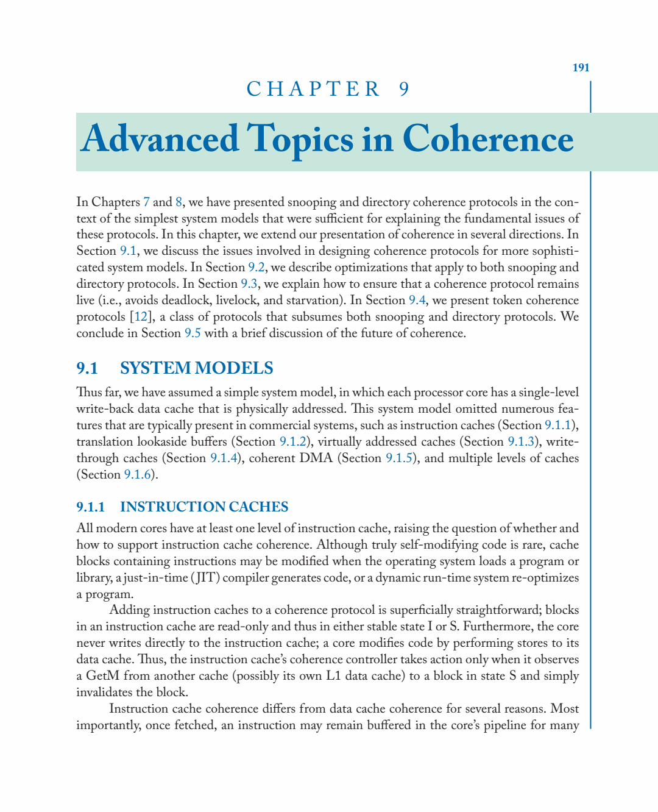
原书第 192 页PDF 214
ENGLISHcycles (e.g., consider a core that fills its 128-instruction window with a long sequence of loads, each of which misses all the way to DRAM). Software that modifies code needs some way to know when a write has affected the fetched instruction stream. Some architectures, such as the AMD Opteron, address this issue using a separate structure that tracks which instructions are in the pipeline. If this structure detects a change to an in-flight instruction, it flushes the pipeline. However, because instructions are modified far less frequently than data, other architectures require the software to explicitly manage coherence. For example, the Power architecture provides the icbi (instruction cache block invalidate) instruction to invalidate an instruction cache entry.
中文周期（例如，设想某个核心用一长串加载指令填满其可容纳128条指令的窗口，并且这些加载全部未命中，最终都要访问DRAM）。修改代码的软件需要某种方式，以确认写入何时影响到已取入的指令流。某些体系结构（如AMD Opteron）使用独立结构跟踪流水线中的指令，以解决这一问题。如果该结构检测到正在执行的指令发生变化，就会清空流水线。然而，指令被修改的频率远低于数据，因此另一些体系结构要求软件显式管理一致性。例如，Power体系结构提供icbi（instruction cache block invalidate，指令缓存块无效化）指令，用于使指令缓存项无效。
ENGLISH9.1.2 TRANSLATION LOOKASIDE BUFFERS (TLBs) Translation lookaside buffers (TLBs) are caches that hold a special type of data: translations from virtual to physical addresses. As with other caches, they must be kept coherent. Like instruction caches, they have not historically participated in the same all-hardware coherence protocols that handle data caches. The traditional approach to TLB coherence is TLB shootdown [18], a software-managed coherence scheme that may or may not have some hardware support. In a classic implementation, a core invalidates a translation entry (e.g., by clearing the page table entry’s PageValid bit) and sends an inter-processor interrupt to all cores. Each core receives its interrupt, traps to a software handler, either invalidates the specific translation entry from its TLBs or flushes all entries from its TLBs (depending upon the platform). Each core must also ensure that there are no instructions in flight which are using the now-stale translation, typically by flushing the pipeline. Each core then sends an acknowledgment back to the initiating core, using an interprocessor interrupt. The initiating core waits for all of the acknowledgments, ensuring that all stale translation entries have been invalidated, before modifying the translation (or reusing the physical page). Some architectures provide special support to accelerate TLB shootdown. For example, the Power architecture eliminates costly inter-processor interrupts by using a special tlbie (TLB invalidate entry) instruction; the initiating core executes a tlbie instruction, which broadcasts the invalidated virtual page number to all the cores and completes only once all cores have completed the invalidation.
中文9.1.2 地址转换后备缓冲器（TLB）
地址转换后备缓冲器（TLB）是一种缓存，其中保存特殊类型的数据：虚拟地址到物理地址的转换关系。与其他缓存一样，TLB也必须保持一致。和指令缓存类似，过去TLB通常不参与用于数据缓存的全硬件缓存一致性协议。传统的TLB一致性维护方式是TLB shootdown[18]，即由软件管理的跨核TLB失效机制，其实现可能有硬件支持，也可能没有。经典实现中，某个核心先使地址转换项失效（例如清除页表项的PageValid位），然后向所有核心发送处理器间中断。各核心收到中断后，陷入软件处理程序，并根据平台支持，使TLB中的特定地址转换项失效，或者清空TLB中的全部条目。各核心还必须确保没有正在执行的指令继续使用已经过期的转换，通常通过清空流水线实现。随后，各核心利用处理器间中断向发起核心返回确认。发起核心等待全部确认，以确保所有过期转换项均已失效，然后才修改地址转换关系（或重新使用物理页）。有些体系结构提供了专门支持，以加速跨核TLB失效。例如，Power体系结构通过特殊的tlbie（TLB invalidate entry，TLB条目无效化）指令消除了开销较大的处理器间中断：发起核心执行tlbie，将待失效的虚拟页号广播给所有核心；只有当全部核心完成无效化后，该指令才完成。
地址转换后备缓冲器（TLB）是一种缓存，其中保存特殊类型的数据：虚拟地址到物理地址的转换关系。与其他缓存一样，TLB也必须保持一致。和指令缓存类似，过去TLB通常不参与用于数据缓存的全硬件缓存一致性协议。传统的TLB一致性维护方式是TLB shootdown[18]，即由软件管理的跨核TLB失效机制，其实现可能有硬件支持，也可能没有。经典实现中，某个核心先使地址转换项失效（例如清除页表项的PageValid位），然后向所有核心发送处理器间中断。各核心收到中断后，陷入软件处理程序，并根据平台支持，使TLB中的特定地址转换项失效，或者清空TLB中的全部条目。各核心还必须确保没有正在执行的指令继续使用已经过期的转换，通常通过清空流水线实现。随后，各核心利用处理器间中断向发起核心返回确认。发起核心等待全部确认，以确保所有过期转换项均已失效，然后才修改地址转换关系（或重新使用物理页）。有些体系结构提供了专门支持，以加速跨核TLB失效。例如，Power体系结构通过特殊的tlbie（TLB invalidate entry，TLB条目无效化）指令消除了开销较大的处理器间中断：发起核心执行tlbie，将待失效的虚拟页号广播给所有核心；只有当全部核心完成无效化后，该指令才完成。
ENGLISHRecent research proposed eliminating TLB shootdown and instead incorporating the TLBs into the existing all-hardware coherence protocol for the data and instruction caches [16]. This all-hardware solution is more scalable than TLB shootdown, but it requires a modification to the TLBs to enable them to be addressable in the same way as the data and instruction caches. That is, the TLBs must snoop the physical addresses of the blocks that hold translations in memory.
中文近期研究提出取消跨核TLB失效的软件机制，转而将TLB纳入数据缓存和指令缓存已有的全硬件缓存一致性协议[16]。这一全硬件方案比TLB shootdown更具可扩展性，但需要修改TLB，使其能够采用与数据缓存和指令缓存相同的方式进行寻址。也就是说，TLB必须监听存储器中保存地址转换信息的那些块的物理地址。
ENGLISH9.1.3 VIRTUAL CACHES Most caches in current systems—and all caches discussed thus far in this primer—are accessed with physical addresses, yet caches can also be accessed with virtual addresses. We illustrate both options in Figure 9.1. A virtually addressed cache (“virtual cache”) has one key advantage with
中文9.1.3 虚拟地址缓存
当前系统中的大多数缓存，以及本书目前讨论的所有缓存，都使用物理地址访问，但缓存也可以使用虚拟地址访问。图9.1展示了这两种选择。相对于物理地址寻址的缓存（“物理缓存”），虚拟地址寻址的缓存（“虚拟缓存”）有一个关键优势：
当前系统中的大多数缓存，以及本书目前讨论的所有缓存，都使用物理地址访问，但缓存也可以使用虚拟地址访问。图9.1展示了这两种选择。相对于物理地址寻址的缓存（“物理缓存”），虚拟地址寻址的缓存（“虚拟缓存”）有一个关键优势：
查看 原书第 192 页 的完整原版面（PDF 214）
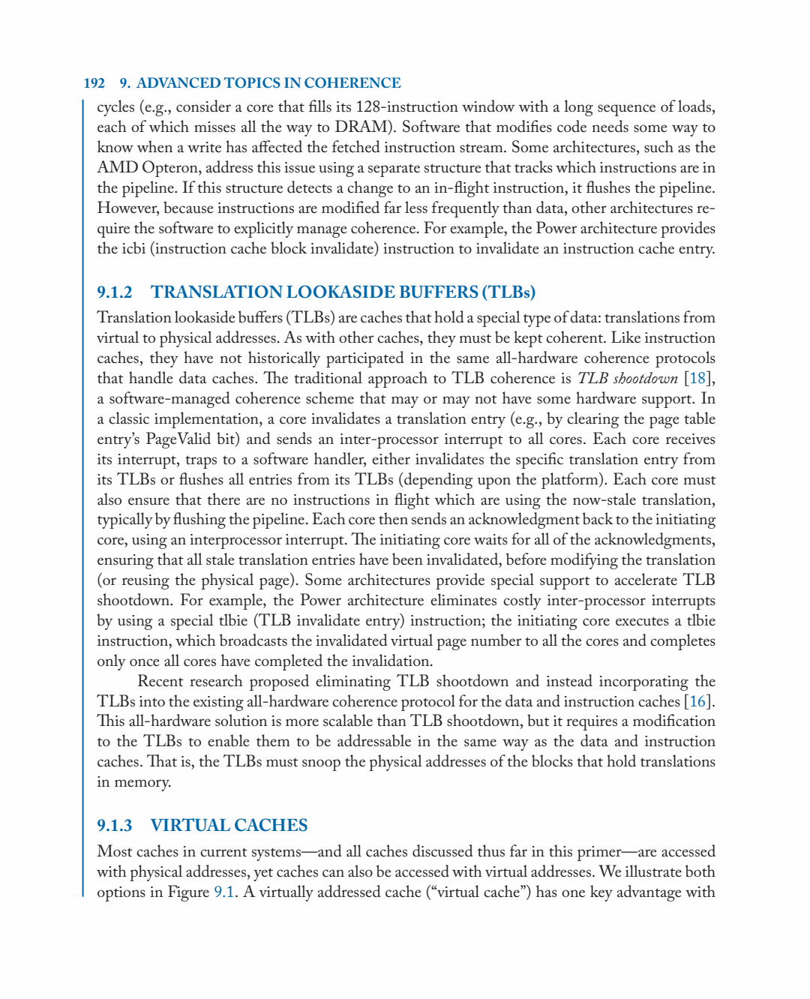
原书第 193 页PDF 215
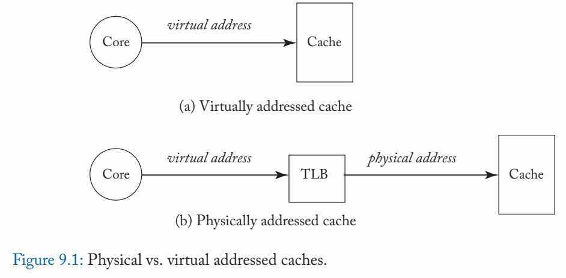
ENGLISHrespect to a physically addressed cache (“physical cache”): the latency of address translation is off the critical path.1 This latency advantage is appealing for level-one caches, where latency is critical, but generally less compelling for lower level caches where latencies are less critical. Virtual caches, however, pose a few challenges to the architect of a coherence protocol:
中文地址转换延迟不在关键路径上。¹ 对于延迟至关重要的一级缓存，这一优势很有吸引力；但对延迟要求相对较低的下级缓存而言，吸引力通常较弱。不过，虚拟缓存会给缓存一致性协议的设计者带来若干挑战：
ENGLISH• Coherence protocols invariably operate on physical addresses, for compatibility with main memory, which would otherwise require its own TLB. Thus, when a coherence request arrives at a virtual cache, the request’s address must undergo reverse translation to obtain the virtual address with which to access the cache.
中文• 为了与主存兼容，缓存一致性协议始终使用物理地址；否则主存也需要自己的TLB。因此，当缓存一致性请求到达虚拟缓存时，必须对请求地址进行反向转换，得到用于访问缓存的虚拟地址。
ENGLISH• Virtual caches introduce the problem of synonyms. Synonyms are multiple virtual addresses that map to the same physical address. Without mechanisms in place to avoid synonyms, it is possible for synonyms to simultaneously exist in a virtual cache. Thus, not only does a virtual cache requires a mechanism for reverse translation but also any given reverse translation could result in multiple virtual addresses.
中文• 虚拟缓存引入了同义地址问题。所谓同义地址，是指映射到同一物理地址的多个虚拟地址。如果没有相应的规避机制，同义地址可能同时存在于虚拟缓存中。因此，虚拟缓存不仅需要反向地址转换机制，而且一次反向转换还可能得到多个虚拟地址。
ENGLISHBecause of the complexity of implementing virtual caches, they are rarely used in current systems. However, they have been used in a number of earlier systems, and it is possible that they could become more relevant again in the future.
中文由于虚拟缓存实现复杂，当前系统很少采用它。不过，许多早期系统曾使用虚拟缓存，未来它也有可能重新受到重视。
ENGLISH9.1.4 WRITE-THROUGH CACHES Our baseline system model assumes writeback L1 data caches and a shared writeback LLC. The other option, write-through caches, has several advantages and disadvantages. The obvious disadvantages include significantly greater bandwidth and power to write data through to the
中文9.1.4 写直达缓存
我们的基准系统模型假设L1数据缓存和共享末级缓存（LLC）均采用写回策略。另一种选择是写直达缓存，它既有优点，也有缺点。明显的缺点包括：将数据写穿到存储层次结构的下一级，需要显著增加带宽和功耗。
我们的基准系统模型假设L1数据缓存和共享末级缓存（LLC）均采用写回策略。另一种选择是写直达缓存，它既有优点，也有缺点。明显的缺点包括：将数据写穿到存储层次结构的下一级，需要显著增加带宽和功耗。
ENGLISH1A cache that is virtually indexed and physically tagged has this same advantage without the shortcomings of virtual caches.
中文¹ 虚拟索引、物理标记的缓存也具有这一优势，同时避免了虚拟缓存的上述缺点。
查看 原书第 193 页 的完整原版面（PDF 215）
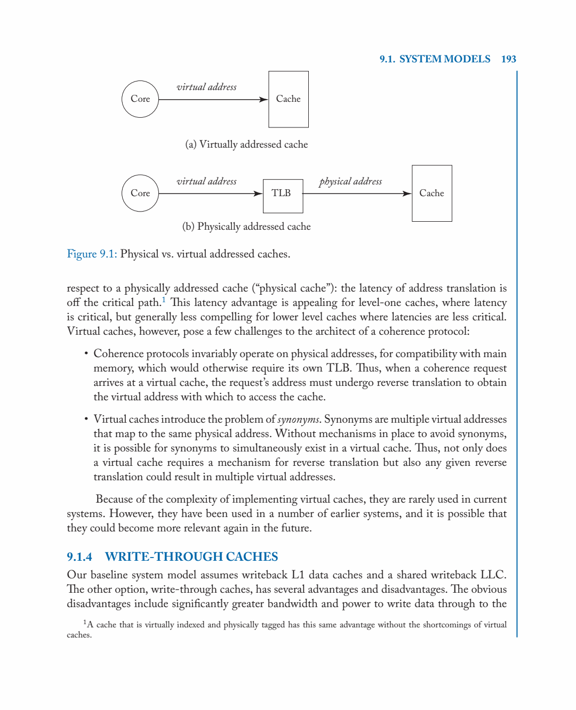
原书第 194 页PDF 216
ENGLISHnext lower level of the memory hierarchy. In modern systems, these disadvantages effectively limit the write-through/writeback decision to the L1 cache.
中文在现代系统中，这些缺点实际上使得写直达与写回的选择主要局限于L1缓存。
ENGLISHThe advantages of write-through L1s include the following.
中文写直达L1缓存具有以下优点。
ENGLISH• A significantly simpler two-state VI (Valid and Invalid) coherence protocol. Stores write through to the LLC and invalidate all Valid copies in other caches.
中文• 可以使用明显更简单的两状态VI（Valid，有效；Invalid，无效）缓存一致性协议。存储操作直接写入LLC，并使其他缓存中所有Valid副本失效。
ENGLISH• An L1 eviction requires no action, besides changing the L1 state to Invalid, because the LLC always holds up-to-date data.
中文• L1逐出缓存块时，除了将L1中的状态改为Invalid以外，不需要采取其他动作，因为LLC始终保存最新数据。
ENGLISH• When the LLC handles a coherence request, it can respond immediately because it always has up-to-date data.
中文• LLC处理缓存一致性请求时可以立即响应，因为它始终具有最新数据。
ENGLISH• When an L1 observes another core’s write, it needs only to change the cache block’s state to Invalid. Importantly, this allows the L1 to represent each block’s state with a single, clearable flip-flop, eliminating complex arbitration or dual-ported state RAMs.
中文• L1观察到其他核心的写入时，只需将对应缓存块的状态改为Invalid。这样，每个缓存块的状态就可以用一个可清零的触发器表示，无须复杂仲裁或双端口状态RAM。
ENGLISH• Finally, write-through caches also facilitate fault tolerance. Although a detailed discussion is outside the scope of this primer, a write-through L1 cache never holds the only copy of a block because the LLC always holds a valid copy. This allows the L1 to use only parity because it can always just invalidate a block with a parity error.
中文• 最后，写直达缓存也有利于容错。详细讨论超出了本书范围，不过，写直达L1缓存从不保存一个块的唯一副本，因为LLC始终保存着有效副本。因此，L1只需采用奇偶校验：发生奇偶校验错误时，将相应块置为无效即可。
ENGLISHWrite-through caches pose some challenges with multithreaded cores and shared L1 caches. Recall that TSO requires write atomicity, and thus all threads (except the thread performing the store) must see the store at the same time. Thus, if two threads T0 and T1 share the same L1 data cache, T0’s store to block A must prevent T1 from accessing the new value until all copies in other caches have been invalidated (or updated). Despite these complications and disadvantages, several designs use write-through L1 caches, including the Sun Niagara processors and AMD Bulldozer.
中文对于多线程核心以及共享L1缓存，写直达缓存会带来一些挑战。回顾一下，TSO要求写原子性，因此除执行存储操作的线程以外，所有线程都必须同时观察到该存储操作。所以，若线程T0和T1共享同一L1数据缓存，T0向块A执行存储时，必须阻止T1访问新值，直到其他缓存中的全部副本都已无效化（或更新）。尽管存在这些复杂性和缺点，仍有若干设计采用写直达L1缓存，包括Sun Niagara处理器和AMD Bulldozer。
ENGLISH9.1.5 COHERENT DIRECT MEMORY ACCESS (DMA) In Chapter 2, when we first introduced coherence, we observed that incoherence can arise only if there are multiple actors that can read and write to caches and memory. Today, the most obvious collection of actors are the multiple cores on a single chip, but the cache coherence problem first arose in systems with a single core and direct memory access (DMA). A DMA controller is an actor that reads and writes memory under explicit system software control, typically at the page granularity. A DMA operation that reads memory should find the most recent version of each block, even if the block resides in a cache in state M or O. Similarly, a DMA operation that writes memory needs to invalidate all stale copies of the block.
中文9.1.5 支持缓存一致性的直接内存访问（DMA）
第2章首次介绍缓存一致性时，我们指出：只有在多个参与者能够读写缓存和存储器的情况下，才可能出现不一致。如今，最直观的一组参与者是同一芯片上的多个核心，但缓存一致性问题最早出现在单核且支持直接内存访问（DMA）的系统中。DMA控制器是在系统软件显式控制下读写存储器的参与者，通常以页为粒度执行操作。读取存储器的DMA操作应当获得每个块的最新版本，即使该块以M或O状态驻留在某个缓存中也应如此。同样，写入存储器的DMA操作需要使该块的所有过期副本失效。
第2章首次介绍缓存一致性时，我们指出：只有在多个参与者能够读写缓存和存储器的情况下，才可能出现不一致。如今，最直观的一组参与者是同一芯片上的多个核心，但缓存一致性问题最早出现在单核且支持直接内存访问（DMA）的系统中。DMA控制器是在系统软件显式控制下读写存储器的参与者，通常以页为粒度执行操作。读取存储器的DMA操作应当获得每个块的最新版本，即使该块以M或O状态驻留在某个缓存中也应如此。同样，写入存储器的DMA操作需要使该块的所有过期副本失效。
ENGLISHIt is straightforward to provide coherent DMA by adding a coherent cache to the DMA controller, and thus having DMA participate in the coherence protocol. In such a model, a
中文一种直接的实现方式是为DMA控制器添加支持缓存一致性的缓存，使DMA参与缓存一致性协议。在这一模型中，
查看 原书第 194 页 的完整原版面（PDF 216）
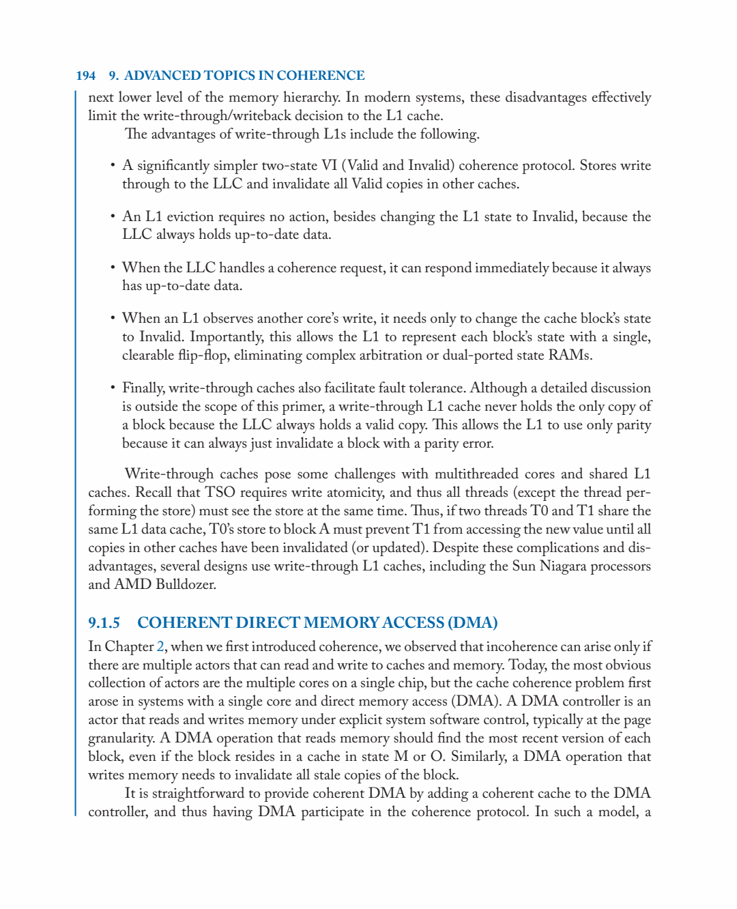
原书第 195 页PDF 217
ENGLISHDMA controller is indistinguishable from a dedicated core, guaranteeing that DMA reads will always find the most recent version of a block and DMA writes will invalidate all stale copies.
中文DMA控制器与专用核心没有区别，从而保证DMA读操作总能获得块的最新版本，而DMA写操作会使所有过期副本失效。
ENGLISHHowever, adding a coherent cache to a DMA controller is undesirable for several reasons. First, DMA controllers have very different locality patterns than conventional cores, and they stream through memory with little, if any, temporal reuse. Thus, DMA controllers have little use for a cache larger than a single block. Second, when a DMA controller writes a block, it generally writes the entire block. Thus, fetching a block with a GetM is wasteful, since the entire data will be overwritten. Many coherence protocols optimize this case using special coherence operations. We could imagine adding a new GetM-NoData request to the protocols in this primer, which seeks M permission but expects only an acknowledgment message rather than a Data message. Other protocols use a special PutNewData message, which updates memory and invalidates all other copies including those in M and O.
中文不过，为DMA控制器添加支持一致性的缓存并不理想，原因有几个。首先，DMA控制器的局部性模式与常规核心差异很大：它通常流式访问存储器，几乎没有时间复用。因此，DMA控制器对容量大于一个块的缓存基本没有需求。其次，DMA控制器写一个块时，一般会写入整个块。因此，通过GetM获取原有块数据是一种浪费，因为全部数据都会被覆盖。许多缓存一致性协议使用专门的操作来优化这种情形。可以设想，在本书协议中增加GetM-NoData请求：它请求M权限，但只期望收到确认消息，而不是Data消息。其他协议使用专门的PutNewData消息，直接更新存储器，并使所有其他副本失效，包括M和O状态的副本。
ENGLISHDMA can also be made to work without hardware cache coherence, by requiring the operating system to selectively flush caches. For example, before initiating a DMA to or from a page P, the operating system could force all caches to flush page P using a protocol similar to TLB Shootdown (or using some other page flushing hardware support). This approach is inefficient, and thus generally only seen in some embedded systems, because the operating system must conservatively flush a page even if none of its blocks are in any cache.
中文即使没有硬件缓存一致性支持，DMA也可以工作，但需要操作系统有选择地刷出缓存。例如，在启动对页P的DMA读写之前，操作系统可以使用类似跨核TLB失效的协议（或其他用于页面刷出的硬件支持），强制所有缓存刷出页P。这种方法效率较低：即使页中的任何块都未驻留在缓存中，操作系统也必须保守地执行页面刷出。因此，它通常只用于某些嵌入式系统。
ENGLISH9.1.6 MULTI-LEVEL CACHES AND HIERARCHICAL COHERENCE PROTOCOLS Our baseline system assumes a single multicore chip with two levels of cache: private levelone data (L1) caches for each core and a shared last-level memory-side cache that holds both data and instructions (LLC). But many other combinations of chips and caches are possible. For example, Intel Nehalem and AMD Opteron processors support systems with multiple multicore chips as well as an additional level of private (per core) L2 caches. Figure 9.2 illustrates a system with two multicore processors, each having two cores with private L2 caches between the private L1s and shared LLC.
中文9.1.6 多级缓存与分层缓存一致性协议
我们的基准系统假设只有一颗多核芯片，并具有两级缓存：每个核心的私有一级数据缓存（L1），以及同时保存数据和指令的共享末级存储器侧缓存（LLC）。但芯片与缓存还存在许多其他组合。例如，Intel Nehalem和AMD Opteron处理器既支持多颗多核芯片组成的系统，也具有额外一级由各核心私有的L2缓存。图9.2展示了一个包含两颗多核处理器的系统；每颗处理器有两个核心，在私有L1和共享LLC之间设有私有L2缓存。
我们的基准系统假设只有一颗多核芯片，并具有两级缓存：每个核心的私有一级数据缓存（L1），以及同时保存数据和指令的共享末级存储器侧缓存（LLC）。但芯片与缓存还存在许多其他组合。例如，Intel Nehalem和AMD Opteron处理器既支持多颗多核芯片组成的系统，也具有额外一级由各核心私有的L2缓存。图9.2展示了一个包含两颗多核处理器的系统；每颗处理器有两个核心，在私有L1和共享LLC之间设有私有L2缓存。
ENGLISHWe next discuss multiple levels of caches on a single multicore chip, systems with multiple multicore processors, and hierarchical coherence protocols.
中文下面依次讨论单颗多核芯片中的多级缓存、包含多颗多核处理器的系统，以及分层缓存一致性协议。
ENGLISHMulti-Level Caches With multiple levels of caches, the coherence protocol must be sure to keep all of these caches coherent. Perhaps the most straightforward solution is to treat each cache completely independently. For example, the L1, L2, and LLC could each independently process all incoming coherence requests; this is the approach taken by the AMD Opteron [1].
中文多级缓存
存在多级缓存时，缓存一致性协议必须确保所有这些缓存保持一致。最直接的办法也许是完全独立地对待每一级缓存。例如，L1、L2和LLC可以各自独立处理所有到达的缓存一致性请求；AMD Opteron[1]采用的就是这种方式。
存在多级缓存时，缓存一致性协议必须确保所有这些缓存保持一致。最直接的办法也许是完全独立地对待每一级缓存。例如，L1、L2和LLC可以各自独立处理所有到达的缓存一致性请求；AMD Opteron[1]采用的就是这种方式。
ENGLISHHowever, we can also design the cache hierarchy such that not every cache needs to snoop every coherence request. As discussed in Section 8.6, a key design option is whether and which caches to make inclusive. An L2 is inclusive if it contains a superset of the blocks in the L1
中文不过，我们也可以设计缓存层次，使得每个缓存无须监听每个一致性请求。如8.6节所述，一个关键设计选择是是否采用包含性，以及在哪些缓存上采用包含性。若L2包含L1缓存中全部块的超集，则L2具有包含性。
查看 原书第 195 页 的完整原版面（PDF 217）
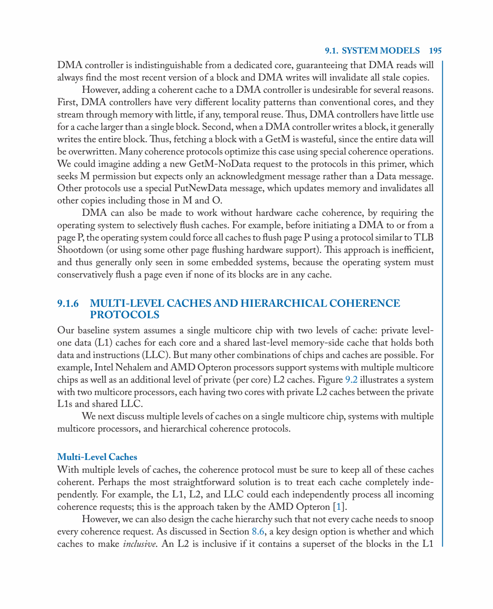
原书第 196 页PDF 218
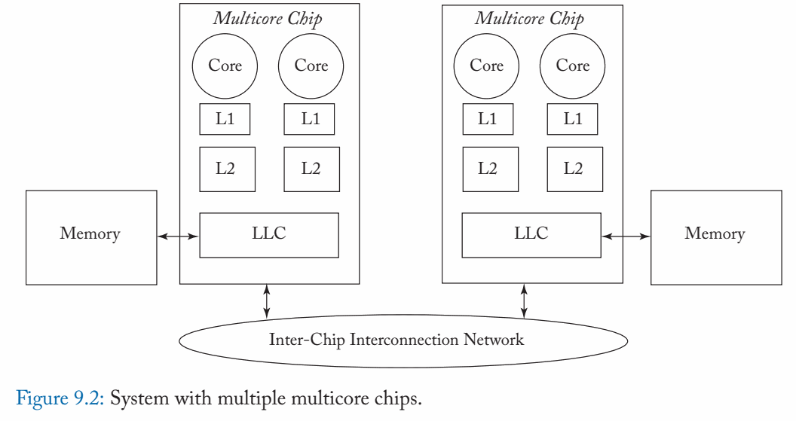
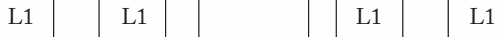
展开可搜索的英文文字
L1 L1 L1 L1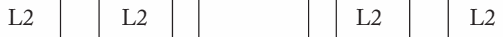
展开可搜索的英文文字
L2 L2 L2 L2展开可搜索的英文文字
Memory LLC LLC MemoryENGLISHcaches. Consider the case of an inclusive L2 when the L2 snoops a GetM for block B from another core. If B is not in the L2, then there is no need to also snoop the L1 caches because B cannot be in any of them. Thus, an inclusive L2 cache can serve as a filter that reduces the amount of coherence request traffic that must be snooped by the L1 caches. If instead B is in the L2, then B might also be in the L1 caches and then the L1 caches must also snoop the request. This is the approach taken by the AMD Bulldozer.
中文考虑一个具有包含性的L2，它监听到其他核心针对块B发出的GetM。如果L2中没有B，就无须再让L1缓存监听，因为任何L1中都不可能存在B。因此，具有包含性的L2可以充当过滤器，减少L1缓存必须监听的一致性请求流量。反之，若L2中存在B，则L1缓存中也可能有B，此时L1也必须监听该请求。AMD Bulldozer采用的就是这种方式。
ENGLISHInclusion’s benefit—the reduction in L1 snoop bandwidth—must be traded off against the space wasted by redundant storage of inclusive blocks. The cache hierarchy can hold a greater number of distinct blocks if it is exclusive (i.e., if a block is in the L2 then it is not in the L1 caches) or non-inclusive (neither inclusive nor exclusive). Another reason not to provide inclusion is to avoid the complexity of maintaining inclusion (i.e., invalidating a block from the L1 when an L2 evicts that block).
中文包含性的收益是降低L1监听带宽，但需要权衡重复保存块所浪费的空间。若缓存层次采用互斥策略（即块在L2中时就不在L1中），或采用非包含策略（既不保证包含，也不保证互斥），就能容纳更多不同的块。不采用包含性的另一个原因，是避免维护包含性的复杂性，例如L2逐出某个块时必须使L1中的该块失效。
ENGLISHMultiple Multicore Processors Larger systems can be built by composing multiple multicore processor chips. While a full treatment of scalable systems is beyond the scope of this primer, we examine one key issue: how to use the LLC. In single-chip systems, the LLC is a memory-side cache logically associated with memory and thus can be largely ignored as far as coherence is concerned. In multi-chip systems, the LLC can alternatively be viewed as another level of the memory hierarchy. We present the options from the perspective of a given chip (the “local” chip) and its local memory; other chips are “remote” chips. The LLC could be used as:
中文多颗多核处理器
通过组合多颗多核处理器芯片，可以构建更大的系统。可扩展系统的全面讨论超出了本书范围，但我们将考察其中一个关键问题：如何使用LLC。在单芯片系统中，LLC是逻辑上与存储器关联的存储器侧缓存，因此讨论一致性时基本可以忽略它。在多芯片系统中，LLC也可以被视为存储层次中的另一级。下面从某颗芯片（“本地”芯片）及其本地存储器的角度介绍这些选择；其他芯片称为“远程”芯片。LLC可以用作：
通过组合多颗多核处理器芯片，可以构建更大的系统。可扩展系统的全面讨论超出了本书范围，但我们将考察其中一个关键问题：如何使用LLC。在单芯片系统中，LLC是逻辑上与存储器关联的存储器侧缓存，因此讨论一致性时基本可以忽略它。在多芯片系统中，LLC也可以被视为存储层次中的另一级。下面从某颗芯片（“本地”芯片）及其本地存储器的角度介绍这些选择；其他芯片称为“远程”芯片。LLC可以用作：
查看 原书第 196 页 的完整原版面（PDF 218）
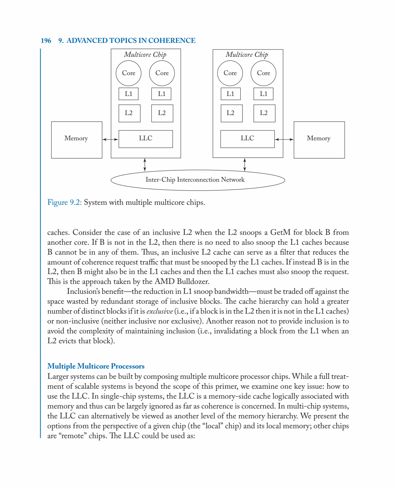
原书第 197 页PDF 219
ENGLISH• A memory-side cache that holds blocks recently requested from the local memory. The requests could be either from only the local chip or from both local and remote chips.
中文• 存储器侧缓存：保存最近从本地存储器请求的块。请求来源可以仅限本地芯片，也可以同时包括本地芯片与远程芯片。
ENGLISH• A core-side cache that holds blocks recently requested by the cores on the chip. The blocks in the LLC could have homes on either this chip or other chips. In this case, the coherence protocol must usually operate among the LLCs and memories of the multiple multicore chips.
中文• 核心侧缓存：保存芯片上各核心最近请求的块。LLC中块的主节点可以位于本芯片，也可以位于其他芯片。在这种情况下，缓存一致性协议通常必须在多颗多核芯片的LLC与存储器之间运行。
ENGLISHThe LLC could also be used for both purposes, in a hybrid scheme. In a hybrid approach, the architects would have to decide how to allocate the LLC to these different demands.
中文LLC还可以采用混合方案，同时承担这两种用途。采用混合方式时，体系结构设计者必须决定如何在两种需求之间分配LLC容量。
ENGLISHHierarchical Coherence Protocols The protocols described in previous chapters are flat protocols, in that there was a single coherence protocol that every cache controller treats identically. However, once we introduce multiple levels of caches, we introduce the possible need for hierarchical coherence protocols.
中文分层缓存一致性协议
前几章介绍的协议都是扁平协议：只有一个缓存一致性协议，每个缓存控制器都以相同方式参与其中。然而，引入多级缓存以后，就可能需要分层缓存一致性协议。
前几章介绍的协议都是扁平协议：只有一个缓存一致性协议，每个缓存控制器都以相同方式参与其中。然而，引入多级缓存以后，就可能需要分层缓存一致性协议。
ENGLISHSome systems are naturally hierarchical, including systems comprised of multiple multicore chips. Within each chip, there could be an intra-chip protocol, and there could be an inter-chip protocol across the chips. Coherence requests that can be satisfied by the intra-chip protocol do not interact with the inter-chip protocol; only when a request cannot be satisfied by another node on the chip does the request get promoted to the inter-chip protocol.
中文某些系统天然具有层次结构，例如由多颗多核芯片构成的系统。每颗芯片内部可以使用片内协议，而芯片之间使用片间协议。能够通过片内协议满足的缓存一致性请求无须与片间协议交互；只有当片内其他节点无法满足请求时，请求才会上升到片间协议。
ENGLISHThe choice of protocol at one level is largely independent of the choice at another level. For example, an intra-chip snooping protocol can be made compatible with an inter-chip directory protocol. Each chip would require a single directory controller that considers the entire chip to be a single node in the directory protocol. The inter-chip directory protocol could be identical to one of the directory protocols presented in Chapter 8, with the directory state naturally represented in a coarse fashion. Another possible hierarchical system could have directory protocols for both the intra- and inter-chip protocols, and the two directory protocols could be the same or even different from each other.
中文某一级协议的选择，在很大程度上独立于其他级的协议选择。例如，片内监听协议可以与片间目录协议兼容。每颗芯片需要一个目录控制器，在目录协议中将整颗芯片视为一个节点。片间目录协议可以与第8章介绍的某种目录协议完全相同，目录状态自然采用粗粒度表示。另一种可能的分层系统是片内和片间都使用目录协议，这两种目录协议既可以相同，也可以不同。
ENGLISHAn advantage of hierarchical protocols for hierarchical systems is that it enables the design of a simple, potentially non-scalable intra-chip design for the commodity chip. When designing a chip, it would be beneficial to not have to design a single protocol that scales to the largest possible number of cores that could exist in a system. Such a protocol is likely to be overkill for the vast majority of systems that are comprised of a single chip.
中文对分层系统采用分层协议的一个优点，是可以为通用芯片设计简单但可扩展性不一定很强的片内协议。设计芯片时，如果无须用一个协议扩展到整个系统可能具有的最大核心数，就能降低设计负担。对于绝大多数仅包含一颗芯片的系统，为最大规模设计的单一协议可能过于复杂。
ENGLISHThere are numerous examples of hierarchical protocols for hierarchical systems. The Sun Wildfire prototype [5] connects multiple snooping systems together with a higher level directory protocol. The AlphaServer GS320 [4] has two levels of directory protocols, one within each quad-processor block and another across these blocks. The Stanford DASH machine [10] consisted of multiple snooping systems connected by a higher level directory protocol.
中文分层系统采用分层协议的例子很多。Sun Wildfire原型[5]利用高层目录协议连接多个监听系统。AlphaServer GS320[4]具有两级目录协议：一级在每个四处理器模块内部，另一级跨越这些模块。Stanford DASH机器[10]由多个监听系统组成，它们通过高层目录协议连接。
ENGLISHIn a system with hundreds or thousands of cores, it might not make much sense to have a single coherence protocol. The system may be more likely to be divided, either statically or dynamically, into domains that each run a separate workload or separate virtual machine. In
中文在包含数百乃至数千个核心的系统中，只采用一个缓存一致性协议可能并不合理。更可能的做法是静态或动态地将系统划分为多个域，每个域运行独立工作负载或虚拟机。在
查看 原书第 197 页 的完整原版面（PDF 219）
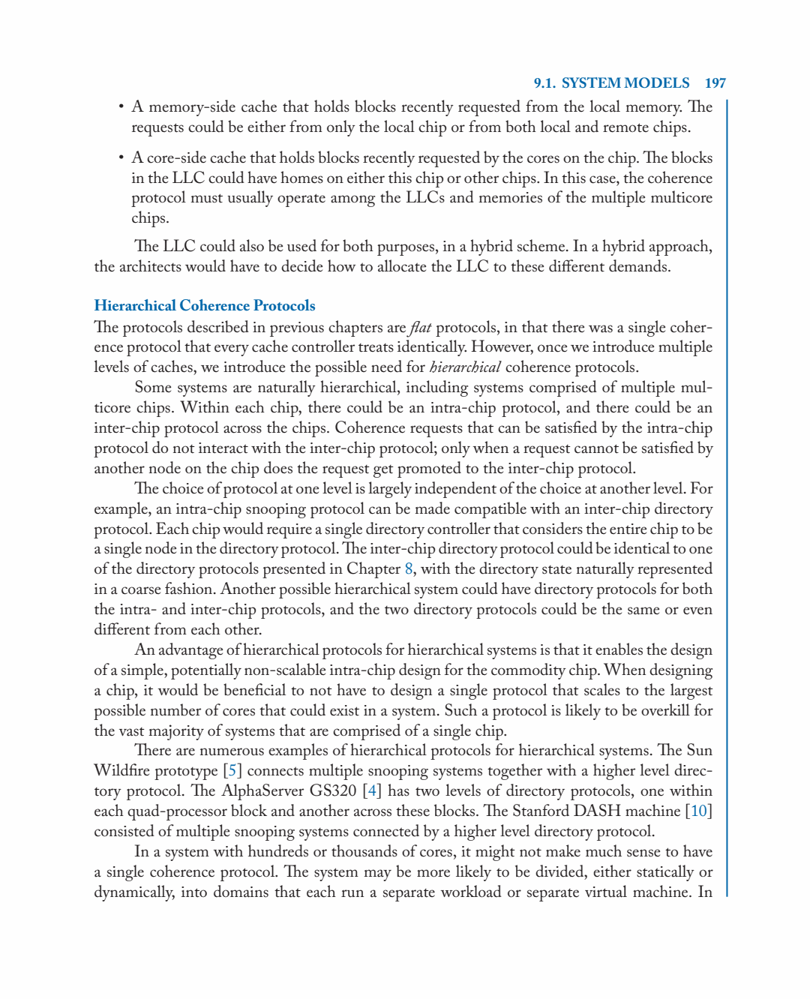
原书第 198 页PDF 220
ENGLISHsuch a system, it may make sense to implement a hierarchical protocol that optimizes for intradomain sharing yet still permits inter-domain sharing. Recent work by Marty and Hill [13] superposes a hierarchical coherence protocol on top of a multicore chip with a flat design. This design enables the common case—intra-domain sharing—to be fast while still allowing sharing across domains.
中文这样的系统中，实现一个针对域内共享优化、同时允许域间共享的分层协议可能更合理。Marty和Hill的近期工作[13]在采用扁平设计的多核芯片之上叠加了分层缓存一致性协议。该设计让常见的域内共享更快，同时仍支持跨域共享。
ENGLISH9.2 PERFORMANCE OPTIMIZATIONS
中文9.2 性能优化
ENGLISHThere is a long history of research into optimizing the performance of coherence protocols. Rather than present a high-level survey, we focus on two optimizations that are largely independent of whether the underlying coherence protocol is snooping or directory. Why these two optimizations? Because they can be effective and they illustrate the kinds of optimizations that are possible.
中文有关缓存一致性协议性能优化的研究已有很长历史。这里不做宏观综述，而是集中介绍两种优化，它们在很大程度上与底层采用监听协议还是目录协议无关。为什么选择这两种？因为它们能带来实际收益，并能展示缓存一致性协议可以进行哪些类型的优化。
ENGLISH9.2.1 MIGRATORY SHARING OPTIMIZATION In many multithreaded programs, a common phenomenon is migratory sharing. For example, one core may read and then write a data block, then a second core may read and write it, and so on. This pattern commonly arises from critical sections (e.g., the lock variable itself ) in which the data block migrates from one core to another. In a typical protocol, each core performs a GetS transaction to read the data and then a subsequent GetM transaction to get write permission for the same block. However, if the system can predict that the data conforms to a migratory sharing pattern, cores could get an exclusive copy of the block when they first read it, thus reducing both the latency and bandwidth to access the data [2, 15, 17]. The migratory optimization is similar to the E state optimization, except that it also needs to return an exclusive copy when the block is in state M in some cache, not just when the block is in state I in all caches.
中文9.2.1 迁移式共享优化
迁移式共享是许多多线程程序中的常见现象。例如，一个核心先读后写某个数据块，随后另一个核心再读写该块，依此类推。这种模式常见于临界区（例如锁变量本身），数据块在核心之间迁移。典型协议中，每个核心先执行GetS事务读取数据，随后执行GetM事务，获得同一块的写权限。然而，如果系统能够预测数据符合迁移式共享模式，就可以在核心第一次读取时直接获得该块的独占副本，从而同时减少访问数据的延迟和带宽开销[2, 15, 17]。迁移式共享优化与E状态优化类似，区别在于：不仅当块在所有缓存中都处于I状态时需要返回独占副本，当它在某个缓存中处于M状态时，也需要如此。
迁移式共享是许多多线程程序中的常见现象。例如，一个核心先读后写某个数据块，随后另一个核心再读写该块，依此类推。这种模式常见于临界区（例如锁变量本身），数据块在核心之间迁移。典型协议中，每个核心先执行GetS事务读取数据，随后执行GetM事务，获得同一块的写权限。然而，如果系统能够预测数据符合迁移式共享模式，就可以在核心第一次读取时直接获得该块的独占副本，从而同时减少访问数据的延迟和带宽开销[2, 15, 17]。迁移式共享优化与E状态优化类似，区别在于：不仅当块在所有缓存中都处于I状态时需要返回独占副本，当它在某个缓存中处于M状态时，也需要如此。
ENGLISHThere are two basic approaches to optimizing migratory sharing. First, one can use some hardware predictor to predict that a particular block exhibits a migratory sharing pattern and issue a GetM rather than a GetS on a load miss. This approach requires no change to the coherence protocol but introduces a few challenges:
中文迁移式共享优化有两种基本方法。第一种是利用硬件预测器预测某个块是否呈现迁移式共享模式，并在加载未命中时发出GetM，而不是GetS。该方法无须修改缓存一致性协议，但会引入若干挑战：
ENGLISH• Predicting migratory sharing: we must design a hardware mechanism to predict when a block is undergoing migratory sharing. A simple approach is to use a table to record which blocks were first obtained with a GetS and then subsequently written, requiring a GetM. On each load miss, the coherence controller could consult the predictor to determine whether a block exhibits a migratory sharing pattern. If so, it could issue a GetM request, rather than a GetS.
中文• 预测迁移式共享：必须设计硬件机制，预测块何时处于迁移式共享过程。一种简单方法是用表记录哪些块先通过GetS获取，随后又被写入，因而需要GetM。每次加载未命中时，一致性控制器查询预测器，判断该块是否符合迁移式共享模式；若符合，就发出GetM请求，而不是GetS。
ENGLISH• Mispredictions: if a block is not migrating, then this optimization can hurt performance. Consider the extreme case of a system in which cores issue only GetM requests. Such a system would never permit multiple cores to share a block in a read-only state.
中文• 预测错误：若块实际上并未迁移，这项优化可能降低性能。考虑一个极端情形：系统中所有核心都只发出GetM请求。这样的系统将永远不允许多个核心以只读状态共享一个块。
查看 原书第 198 页 的完整原版面（PDF 220）
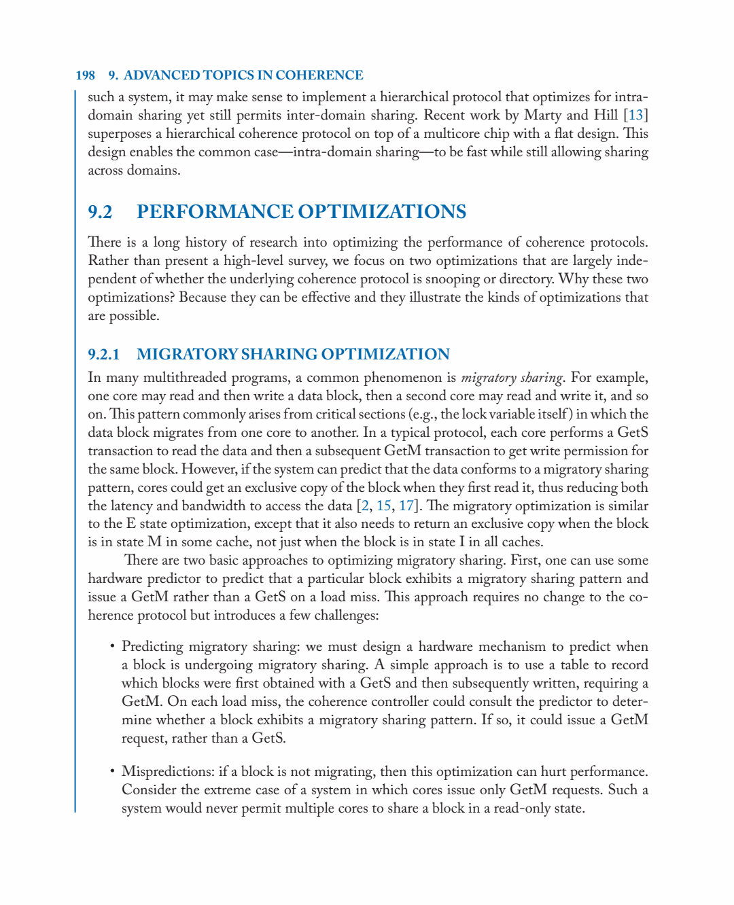
原书第 199 页PDF 221
ENGLISHAlternatively, we can extend the coherence protocol with an additional Migratory M (MM) state. The MM state is equivalent to the state M, from a coherence perspective (i.e., dirty, exclusive, owned), but it indicates that the block was obtained by a GetS in response to a predicted migratory sharing pattern. If the local core proceeds to modify a block in MM, reinforcing the migratory sharing pattern, it changes the block to state M. If a core in state M receives a GetS from another core, it predicts that the access will be migratory and sends exclusive data (invalidating its own copy). If the Other-GetS finds the block in state MM, the migratory pattern has been broken and the core sends a shared copy and reverts to S (or possibly O). Thus, if many cores make GetS requests (without subsequent stores and GetM requests), all cores will receive S copies.
中文另一种方法是在缓存一致性协议中增加迁移式M状态（Migratory M，MM）。从缓存一致性角度看，MM等同于M（即脏、独占且拥有所有权），但它表示该块是由于预测到迁移式共享，而通过GetS获取的。如果本地核心随后修改MM状态的块，就进一步证实了迁移式共享模式，并将块转为M状态。如果持有M状态块的核心收到其他核心的GetS，它会预测该访问具有迁移式特征，发送独占数据并使自身副本失效。如果Other-GetS发现块处于MM状态，则说明迁移式模式已经中断，该核心发送共享副本，并退回S状态（也可能是O状态）。因此，若许多核心连续发出GetS请求，却没有后续存储和GetM请求，所有核心最终都将获得S副本。
ENGLISHMigratory sharing is just one example of a phenomenon that, if detected, can be exploited to improve the performance of coherence protocols. There have been many schemes that target specific phenomena, as well as more general approaches to predicting coherence events [14].
中文迁移式共享只是一种例子：如果能够检测到某种现象，就可以利用它提升缓存一致性协议的性能。已有许多方案针对特定现象进行优化，也有更通用的缓存一致性事件预测方法[14]。
ENGLISH9.2.2 FALSE SHARING OPTIMIZATIONS One performance problem that can plague coherence protocols is false sharing. False sharing occurs when two cores are reading and writing different data that happen to reside on the same cache block. Even though the cores are not actually sharing the data on the block (i.e., the sharing is false), there can be a significant amount of coherence traffic between the cores for the block. This coherence traffic hurts performance when a core is waiting for coherence permissions to access a block, and it increases the load on the interconnection network. The likelihood of false sharing occurring is a function of the block size—a larger block can hold more unrelated pieces of data and thus larger blocks are more prone to false sharing—and the workload. There are at least two optimizations to mitigate the impact of false sharing.
中文9.2.2 伪共享优化
伪共享是可能困扰缓存一致性协议的一类性能问题。当两个核心读写不同的数据，而这些数据恰好位于同一缓存块中时，就会出现伪共享。虽然核心并未真正共享块内的数据（因此称为“伪”共享），但围绕该块仍可能在核心之间产生大量一致性流量。核心等待一致性权限以访问块时，这些流量会影响性能，同时还会增加互连网络的负载。伪共享出现的可能性取决于块大小和工作负载：较大的块能够容纳更多彼此无关的数据，因此更容易发生伪共享。至少有两种优化可以减轻伪共享的影响。
伪共享是可能困扰缓存一致性协议的一类性能问题。当两个核心读写不同的数据，而这些数据恰好位于同一缓存块中时，就会出现伪共享。虽然核心并未真正共享块内的数据（因此称为“伪”共享），但围绕该块仍可能在核心之间产生大量一致性流量。核心等待一致性权限以访问块时，这些流量会影响性能，同时还会增加互连网络的负载。伪共享出现的可能性取决于块大小和工作负载：较大的块能够容纳更多彼此无关的数据，因此更容易发生伪共享。至少有两种优化可以减轻伪共享的影响。
ENGLISHSub-Block Coherence Without reducing the block size, we can perform coherence at a finer, sub-block granularity [7]. Thus, it is possible for a block in a cache to have different coherence states for different subblocks. Sub-blocking reduces false sharing, but it requires extra state bits for each block to hold the sub-block states.
中文子块级缓存一致性
无须减小缓存块大小，也可以在更细的子块粒度维护缓存一致性[7]。这样，同一缓存块内不同子块就可以具有不同的一致性状态。子块化能够减少伪共享，但每个块需要额外的状态位来保存各子块状态。
无须减小缓存块大小，也可以在更细的子块粒度维护缓存一致性[7]。这样，同一缓存块内不同子块就可以具有不同的一致性状态。子块化能够减少伪共享，但每个块需要额外的状态位来保存各子块状态。
ENGLISHSpeculation An architect can develop a hardware mechanism to predict when a block that is invalid in a cache is the victim of false sharing [6]. If the predictor believes the block is invalid due to false sharing, the core can speculatively use the data in the block until it obtains coherence permissions to the block. If the prediction was correct, this speculation overcomes the latency penalty of false sharing, but it does not reduce the traffic on the interconnection network.
中文推测执行
体系结构设计者可以设计硬件机制，预测缓存中处于无效状态的块是否遭遇了伪共享[6]。若预测器认为块因伪共享而失效，核心便可在获得该块的一致性权限之前，推测性地使用块中的数据。预测正确时，这种推测能够消除伪共享带来的延迟损失，但不能减少互连网络流量。
体系结构设计者可以设计硬件机制，预测缓存中处于无效状态的块是否遭遇了伪共享[6]。若预测器认为块因伪共享而失效，核心便可在获得该块的一致性权限之前，推测性地使用块中的数据。预测正确时，这种推测能够消除伪共享带来的延迟损失，但不能减少互连网络流量。
查看 原书第 199 页 的完整原版面（PDF 221）
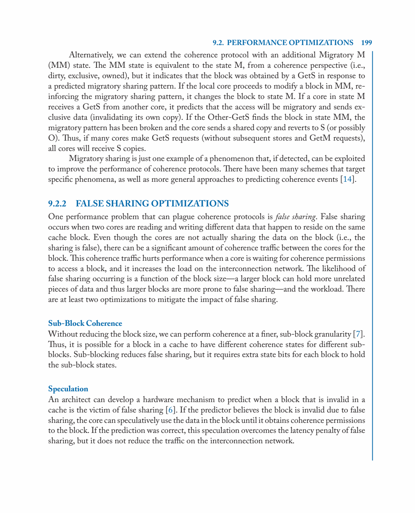
原书第 200 页PDF 222
ENGLISH9.3 MAINTAINING LIVENESS
中文9.3 保持活性
ENGLISHIn Chapter 2, we defined coherence and the invariants that must be maintained by a coherence protocol. These invariants are safety invariants; if these invariants are maintained, then the protocol will never allow unsafe (incorrect) behavior. Facetiously, it is easy to provide safety because an unplugged computer never does anything incorrect! The key is to provide both safety and liveness, where providing liveness requires the prevention of three classes of situations: deadlock, livelock, and starvation.
中文第2章定义了缓存一致性，以及缓存一致性协议必须维持的不变式。这些是不变的安全性条件；只要保持它们，协议就不会允许不安全（不正确）的行为。开个玩笑，保证安全性其实很容易，因为一台拔掉电源的计算机从不会做错任何事！关键在于同时保证安全性与活性，而保证活性需要避免三类情形：死锁、活锁和饥饿。
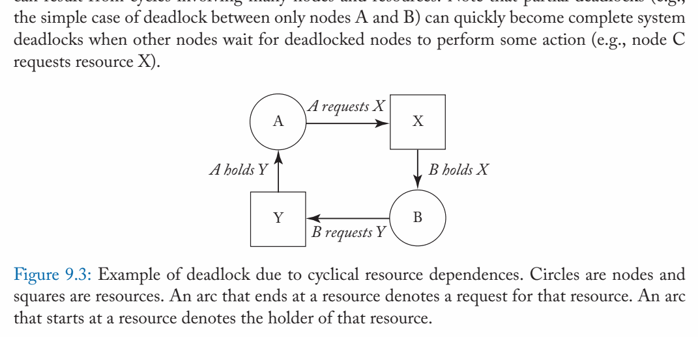
ENGLISH9.3.1 DEADLOCK As discussed briefly in Section 8.2.3, deadlock is the situation in which two or more actors wait for each other to perform some action, and thus never make progress. Typically, deadlock results from a cycle of resource dependences. Consider the simple case of two nodes A and B and two resources X and Y. Assume A holds resource Y and B holds resource X. If A requests X and B requests Y, then unless one node relinquishes the resource it already holds, these two nodes will deadlock. We illustrate this cyclical dependence graph in Figure 9.3. More generally, deadlock can result from cycles involving many nodes and resources. Note that partial deadlocks (e.g., the simple case of deadlock between only nodes A and B) can quickly become complete system deadlocks when other nodes wait for deadlocked nodes to perform some action (e.g., node C requests resource X).
中文9.3.1 死锁
8.2.3节简要讨论过：死锁是指两个或更多参与者相互等待对方采取某个动作，因而永远无法取得进展。通常，死锁源于资源依赖形成了环。考虑一个简单情形：有节点A、B和资源X、Y，A持有Y，B持有X。如果A请求X，B请求Y，那么除非某个节点放弃已持有的资源，否则二者将发生死锁。图9.3给出了这一循环依赖图。更一般地，死锁可能由涉及多个节点和资源的环引起。注意，当其他节点等待已经死锁的节点执行动作时（例如节点C请求资源X），局部死锁（例如只有A、B两个节点死锁）就可能迅速演变为整个系统的死锁。
8.2.3节简要讨论过：死锁是指两个或更多参与者相互等待对方采取某个动作，因而永远无法取得进展。通常，死锁源于资源依赖形成了环。考虑一个简单情形：有节点A、B和资源X、Y，A持有Y，B持有X。如果A请求X，B请求Y，那么除非某个节点放弃已持有的资源，否则二者将发生死锁。图9.3给出了这一循环依赖图。更一般地，死锁可能由涉及多个节点和资源的环引起。注意，当其他节点等待已经死锁的节点执行动作时（例如节点C请求资源X），局部死锁（例如只有A、B两个节点死锁）就可能迅速演变为整个系统的死锁。
ENGLISHProtocol Deadlocks In coherence protocols, deadlock can arise at the protocol level, at cache resource allocation, and in the network. Protocol deadlocks arise when a coherence controller waits for a message that will never be sent. For example, consider a (buggy) directory protocol that does not wait for a Put-Ack after sending a PutS, and instead immediately transitions to state I. If the directory controller sends an Inv (e.g., in response to core C1’s GetM request) to core C0 at the same
中文协议死锁
在缓存一致性协议中，死锁可能出现在协议层、缓存资源分配过程中或网络中。协议死锁发生于一致性控制器等待一条永远不会发出的消息时。例如，考虑一个存在缺陷的目录协议：发送PutS后不等待Put-Ack，而是立即转为I状态。如果目录控制器向核心C0发送Inv（例如响应核心C1的GetM请求），恰好与C0向目录发送PutS同时发生，
在缓存一致性协议中，死锁可能出现在协议层、缓存资源分配过程中或网络中。协议死锁发生于一致性控制器等待一条永远不会发出的消息时。例如，考虑一个存在缺陷的目录协议：发送PutS后不等待Put-Ack，而是立即转为I状态。如果目录控制器向核心C0发送Inv（例如响应核心C1的GetM请求），恰好与C0向目录发送PutS同时发生，
查看 原书第 200 页 的完整原版面（PDF 222）
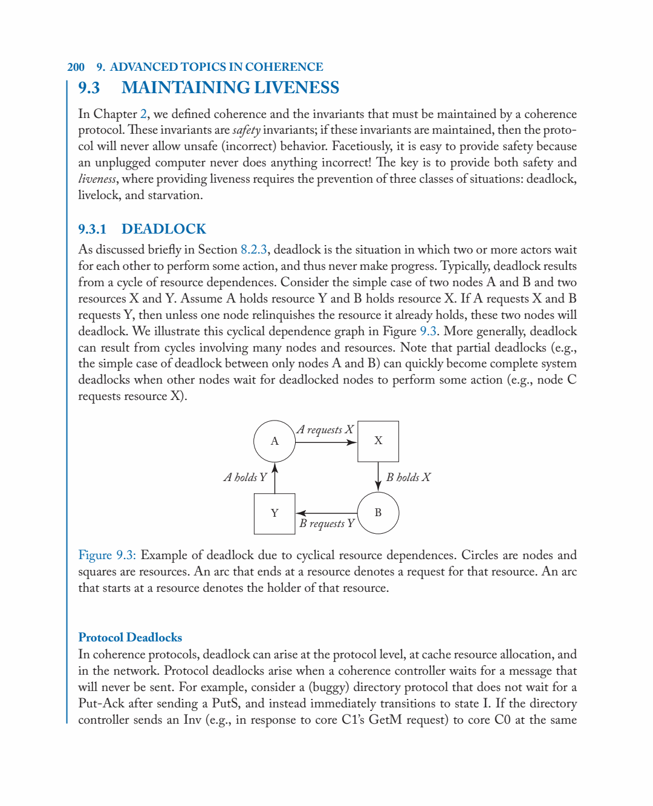
原书第 201 页PDF 223
ENGLISHtime that core C0 sends a PutS to the directory, then C1 will never get an Inv-Ack from core C0 and will deadlock waiting for it. Such deadlocks represent protocol errors and usually arise from untested race conditions.
中文那么C1将永远收不到C0的Inv-Ack，并在等待它时陷入死锁。这类死锁表明协议存在错误，通常由未经测试的竞争条件触发。
ENGLISHCache Resource Deadlocks Cache resource deadlocks arise when a cache controller must allocate a resource before performing some action. These deadlocks typically arise either when handling another core’s request or on writebacks. For example, consider a cache controller that has a set of shared buffers (e.g., transaction buffer entries, or TBEs) that may be allocated both when the core initiates a coherence request and when servicing another core’s request. If the core issues enough coherence requests to allocate all the buffers, then it cannot process another core’s request until it completes one of its own. If all cores reach this state, then the system deadlocks.
中文缓存资源死锁
当缓存控制器必须先分配某项资源才能执行某个动作时，就可能出现缓存资源死锁。这类死锁通常发生在处理其他核心请求或写回时。例如，某个缓存控制器具有一组共享缓冲区（如事务缓冲条目，TBE），本核心发起一致性请求和服务其他核心请求都可能需要分配这些条目。如果本核心发出了足够多的一致性请求，占满了全部缓冲区，那么在自己的某个请求完成之前，它就无法处理其他核心的请求。如果所有核心都进入这种状态，系统便会死锁。
当缓存控制器必须先分配某项资源才能执行某个动作时，就可能出现缓存资源死锁。这类死锁通常发生在处理其他核心请求或写回时。例如，某个缓存控制器具有一组共享缓冲区（如事务缓冲条目，TBE），本核心发起一致性请求和服务其他核心请求都可能需要分配这些条目。如果本核心发出了足够多的一致性请求，占满了全部缓冲区，那么在自己的某个请求完成之前，它就无法处理其他核心的请求。如果所有核心都进入这种状态，系统便会死锁。
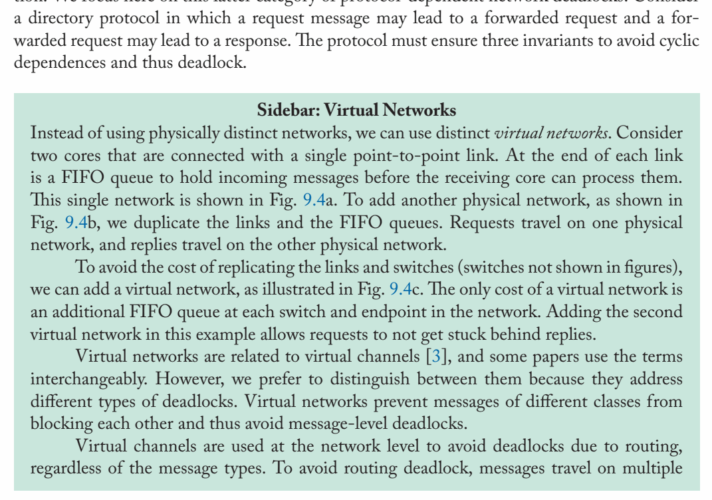
ENGLISHProtocol-Dependent Network Deadlocks There are two causes of network deadlocks: deadlocks due to buggy routing algorithms, which are independent of the types of messages and the coherence protocol, and network deadlocks that arise because of the particular messages being exchanged during coherence protocol operation. We focus here on this latter category of protocol-dependent network deadlocks. Consider a directory protocol in which a request message may lead to a forwarded request and a forwarded request may lead to a response. The protocol must ensure three invariants to avoid cyclic dependences and thus deadlock.
中文与协议相关的网络死锁
网络死锁有两类原因：一类是路由算法有缺陷所导致的死锁，与消息类型和缓存一致性协议无关；另一类则由缓存一致性协议运行期间交换的特定消息引起。这里关注后一类，即与协议相关的网络死锁。考虑一种目录协议，其中请求消息可能产生转发请求，而转发请求又可能产生响应。协议必须保证以下三个不变式，才能避免循环依赖及其引起的死锁。
网络死锁有两类原因：一类是路由算法有缺陷所导致的死锁，与消息类型和缓存一致性协议无关；另一类则由缓存一致性协议运行期间交换的特定消息引起。这里关注后一类，即与协议相关的网络死锁。考虑一种目录协议，其中请求消息可能产生转发请求，而转发请求又可能产生响应。协议必须保证以下三个不变式，才能避免循环依赖及其引起的死锁。
ENGLISHSidebar: Virtual Networks Instead of using physically distinct networks, we can use distinct virtual networks. Consider two cores that are connected with a single point-to-point link. At the end of each link is a FIFO queue to hold incoming messages before the receiving core can process them. This single network is shown in Fig. 9.4a. To add another physical network, as shown in Fig. 9.4b, we duplicate the links and the FIFO queues. Requests travel on one physical network, and replies travel on the other physical network. To avoid the cost of replicating the links and switches (switches not shown in figures), we can add a virtual network, as illustrated in Fig. 9.4c. The only cost of a virtual network is an additional FIFO queue at each switch and endpoint in the network. Adding the second virtual network in this example allows requests to not get stuck behind replies. Virtual networks are related to virtual channels [3], and some papers use the terms interchangeably. However, we prefer to distinguish between them because they address different types of deadlocks. Virtual networks prevent messages of different classes from blocking each other and thus avoid message-level deadlocks. Virtual channels are used at the network level to avoid deadlocks due to routing, regardless of the message types. To avoid routing deadlock, messages travel on multiple
中文旁注：虚拟网络
可以使用相互独立的虚拟网络，替代物理上独立的网络。考虑通过一条点到点链路连接的两个核心。链路两端各有一个FIFO队列，用于在接收核心能够处理消息之前保存到达的消息。图9.4a展示了这个单网络。增加一个物理网络时，如图9.4b所示，需要复制链路和FIFO队列。请求在一个物理网络上传输，回复在另一个物理网络上传输。为避免复制链路和交换机（图中未绘出交换机）的开销，可以增加虚拟网络，如图9.4c所示。虚拟网络的额外成本仅是在网络的每个交换机和端点增加一个FIFO队列。在这个例子中，增加第二个虚拟网络使请求不再被阻塞在回复之后。虚拟网络与虚拟通道[3]有关，有些论文会混用这两个术语。不过，我们倾向于区分二者，因为它们解决的死锁类型不同。虚拟网络防止不同类别的消息相互阻塞，从而避免消息层面的死锁。虚拟通道则在网络层使用，用于避免路由引起的死锁，与消息类型无关。为避免路由死锁，消息需要在多个
可以使用相互独立的虚拟网络，替代物理上独立的网络。考虑通过一条点到点链路连接的两个核心。链路两端各有一个FIFO队列，用于在接收核心能够处理消息之前保存到达的消息。图9.4a展示了这个单网络。增加一个物理网络时，如图9.4b所示，需要复制链路和FIFO队列。请求在一个物理网络上传输，回复在另一个物理网络上传输。为避免复制链路和交换机（图中未绘出交换机）的开销，可以增加虚拟网络，如图9.4c所示。虚拟网络的额外成本仅是在网络的每个交换机和端点增加一个FIFO队列。在这个例子中，增加第二个虚拟网络使请求不再被阻塞在回复之后。虚拟网络与虚拟通道[3]有关，有些论文会混用这两个术语。不过，我们倾向于区分二者，因为它们解决的死锁类型不同。虚拟网络防止不同类别的消息相互阻塞，从而避免消息层面的死锁。虚拟通道则在网络层使用，用于避免路由引起的死锁，与消息类型无关。为避免路由死锁，消息需要在多个
查看 原书第 201 页 的完整原版面（PDF 223）
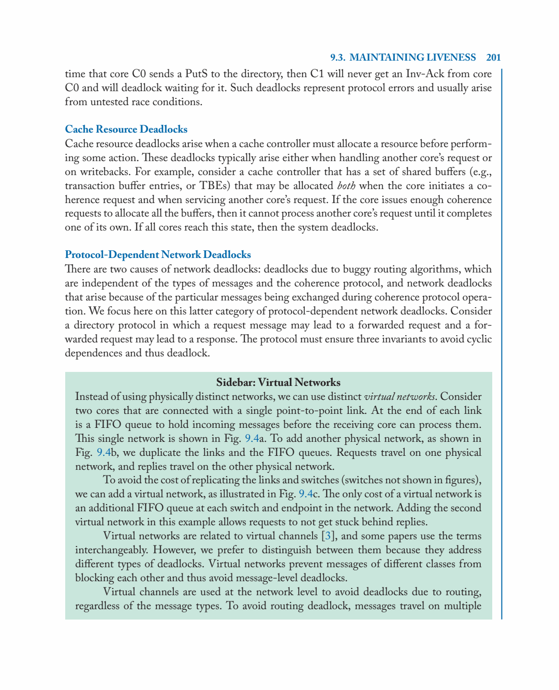
原书第 202 页PDF 224
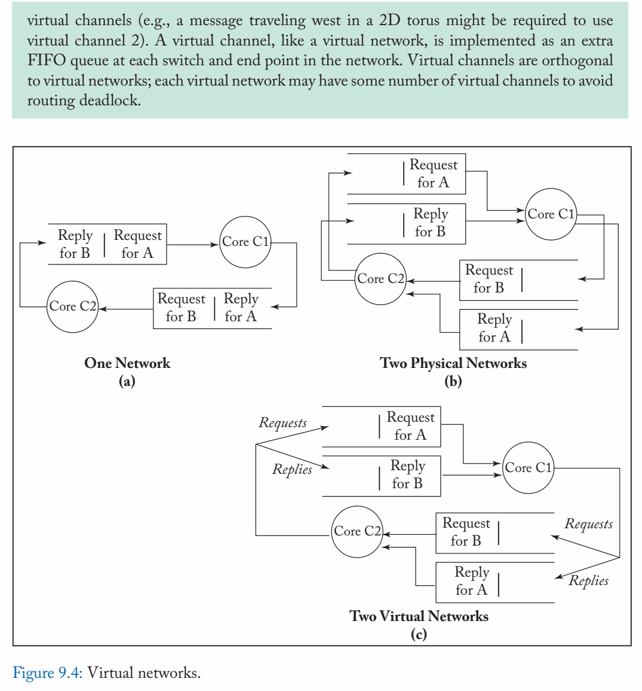
ENGLISHvirtual channels (e.g., a message traveling west in a 2D torus might be required to use virtual channel 2). A virtual channel, like a virtual network, is implemented as an extra FIFO queue at each switch and end point in the network. Virtual channels are orthogonal to virtual networks; each virtual network may have some number of virtual channels to avoid routing deadlock.
中文虚拟通道上传输（例如，在二维环面网络中向西传输的消息可能必须使用虚拟通道2）。与虚拟网络一样，虚拟通道通过在网络的每个交换机和端点增加FIFO队列实现。虚拟通道与虚拟网络彼此正交；每个虚拟网络都可以具有若干虚拟通道，以避免路由死锁。
ENGLISH• As explained in Section 8.2.3, each message class must travel on its own network. The networks may be physical or virtual (see sidebar on “virtual networks”), but the key is avoiding situations in which a message of one class becomes stuck behind a message of another class in a FIFO buffer. In this example, requests, forwarded requests, and responses
中文• 如8.2.3节所述，每类消息都必须在各自的网络上传输。网络可以是物理网络，也可以是虚拟网络（见“虚拟网络”旁注）；关键在于避免某一类消息在FIFO缓冲区中被阻塞在另一类消息之后。在此例中，请求、转发请求和响应
查看 原书第 202 页 的完整原版面（PDF 224）
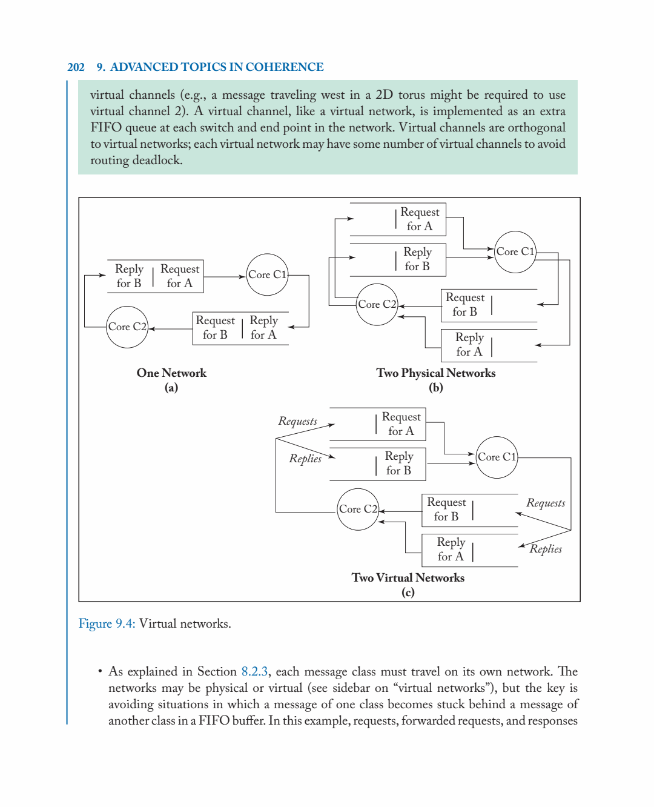
原书第 203 页PDF 225
ENGLISHall travel on separate networks. A coherence controller thus has three incoming FIFOs, one for each network.
中文分别经由不同网络传输。因此，一致性控制器具有三个输入FIFO，每个网络对应一个。
ENGLISH• Message classes must have a dependence order. If a message of class A can cause a coherence controller to issue a message of class B, then a coherence controller may not stall the processing of an incoming class B message while waiting for a class A message. In the directory example, a coherence controller cannot stall the processing of a forwarded request while waiting for a request to arrive, nor can it stall the processing of a response while waiting for a forwarded request.
中文• 各消息类别必须具有依赖顺序。如果A类消息会使一致性控制器发出B类消息，那么控制器就不能因为等待A类消息，而暂停处理已经到达的B类消息。在目录协议的例子中，一致性控制器不能为等待请求到达而暂停处理转发请求，也不能为等待转发请求而暂停处理响应。
ENGLISH• The last message class in this chain of dependences—the response message, in this directory example—must always be “sunk.” That is, if a coherence controller receives a response message, there must be no message class than can prevent it from being removed from its incoming queue.
中文• 依赖链中的最后一类消息——在这个目录协议例子中即响应消息——必须始终能够被“接收消化”。也就是说，一致性控制器收到响应消息后，不能有任何消息类别阻止该响应从输入队列中移除。
ENGLISHThese three invariants eliminate the possibility of a cycle. Even though a request can be stalled while waiting for responses or forwarded requests, every request will eventually be processed because the number of responses and forwarded requests is bounded by the number of outstanding transactions.
中文这三个不变式消除了形成环的可能。虽然请求可以因为等待响应或转发请求而停顿，但每个请求最终都会得到处理，因为响应和转发请求的数量受尚未完成事务的数量所限制。
ENGLISH9.3.2 LIVELOCK Livelock is a situation in which two or more actors perform actions and change states, yet never make progress. Livelock is a special case of starvation, discussed next. Livelock occurs most frequently in coherence protocols that use negative acknowledgment messages (NACKs). A node may issue a coherence request, but receive a NACK, prompting a retry. If contention or some repeatable race with another node causes this case to recur indefinitely, then the nodes livelock. The protocols in this primer do not use NACKs, so we focus on another well-known livelock scenario involving coherence permissions that can arise in these protocols.
中文9.3.2 活锁
活锁是指两个或更多参与者不断执行动作、改变状态，却始终无法取得进展。活锁是下一节将讨论的饥饿的一种特例。活锁最常见于使用否定确认消息（NACK）的缓存一致性协议。节点可能发出一致性请求后收到NACK，因而重试。如果竞争，或与另一个节点之间可重复出现的竞态，使这一过程无限重复，节点就会陷入活锁。本书介绍的协议不使用NACK，因此这里关注另一种众所周知、且可能出现在这些协议中的活锁情形，它与一致性权限有关。
活锁是指两个或更多参与者不断执行动作、改变状态，却始终无法取得进展。活锁是下一节将讨论的饥饿的一种特例。活锁最常见于使用否定确认消息（NACK）的缓存一致性协议。节点可能发出一致性请求后收到NACK，因而重试。如果竞争，或与另一个节点之间可重复出现的竞态，使这一过程无限重复，节点就会陷入活锁。本书介绍的协议不使用NACK，因此这里关注另一种众所周知、且可能出现在这些协议中的活锁情形，它与一致性权限有关。
ENGLISHThis cause of livelock is the so-called “window of vulnerability” problem [8], an example of which is illustrated in Table 9.1. Consider a snooping protocol in which Core C1 issues a GetS request for block B and changes B’s state to ISAD (in I, going to S, waiting for Own-GetS and data). At some point later, C1 observes its Own-GetS on the bus and changes B’s state to state ISD. Between when B goes to state ISD and when C1 receives the data response, C1 is vulnerable to observing a GetM request for B from another core on the bus. In an optimized protocol, like the protocol in Section 7.5.5, if a GetM arrives for B in state ISD, C1 will change B’s state to ISDI. In this transient state, when C1 later receives the data response, C1 changes B’s state to I. Because C1 cannot perform a load to a block in I, it must issue another GetS for B. However, this next GetS is just as susceptible to the window of vulnerability problem, and thus C1 may never make forward progress. The core is still active, and thus the system is not deadlocked, but it never makes forward progress. Somewhat perversely, this situation is most
中文这种活锁原因就是所谓的“脆弱窗口”（window of vulnerability）问题[8]，表9.1给出了示例。考虑一个监听协议：核心C1对块B发出GetS请求，将B的状态改为ISAD（处于I、向S转换，等待Own-GetS和数据）。稍后，C1在总线上观察到自己的Own-GetS，将B转为ISD。从B进入ISD到C1收到数据响应之间，若C1在总线上观察到其他核心对B发出的GetM，就可能触发问题。在7.5.5节介绍的优化协议中，如果B处于ISD时收到GetM，C1会将B转为ISDI。在这一瞬态状态下，当C1后来收到数据响应时，会将B转为I。由于C1不能从I状态的块执行加载，它必须再次对B发出GetS。然而，新的GetS同样可能受到脆弱窗口问题的影响，所以C1可能永远无法取得进展。核心仍在活动，因此系统并没有死锁，但它始终无法向前推进。更糟的是，这种情况最
查看 原书第 203 页 的完整原版面（PDF 225）
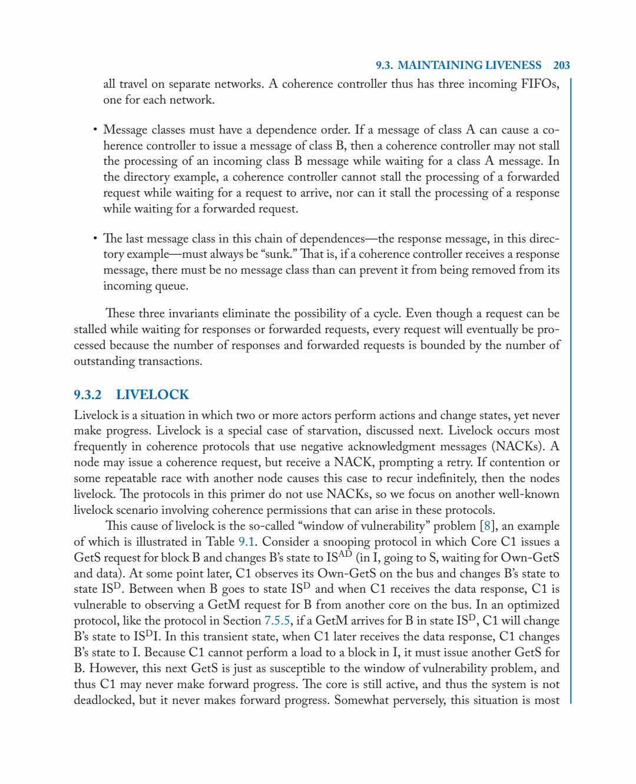
原书第 204 页PDF 226
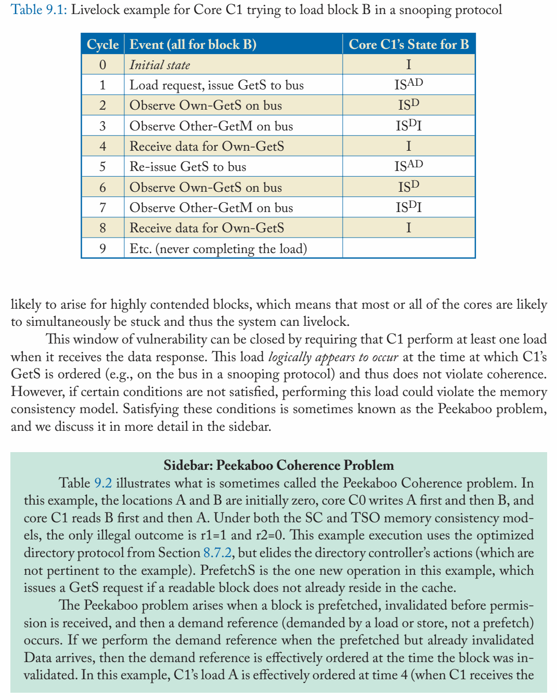
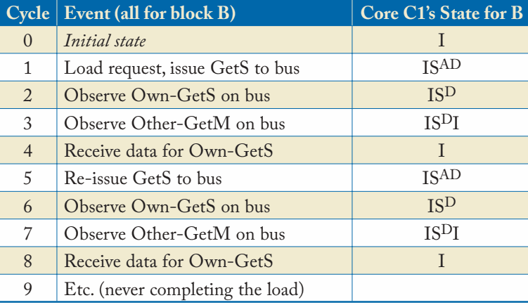
展开可搜索的英文文字
Cycle Event (all for block B) Core C1’s State for B 0 Initial state I 1 Load request, issue GetS to bus ISAD 2 Observe Own-GetS on bus ISD 3 Observe Other-GetM on bus ISDI 4 Receive data for Own-GetS I 5 Re-issue GetS to bus ISAD 6 Observe Own-GetS on bus ISD 7 Observe Other-GetM on bus ISDI 8 Receive data for Own-GetS I 9 Etc. (never completing the load)ENGLISHlikely to arise for highly contended blocks, which means that most or all of the cores are likely to simultaneously be stuck and thus the system can livelock. This window of vulnerability can be closed by requiring that C1 perform at least one load when it receives the data response. This load logically appears to occur at the time at which C1’s GetS is ordered (e.g., on the bus in a snooping protocol) and thus does not violate coherence. However, if certain conditions are not satisfied, performing this load could violate the memory consistency model. Satisfying these conditions is sometimes known as the Peekaboo problem, and we discuss it in more detail in the sidebar.
中文容易出现在竞争激烈的块上，这意味着多数乃至所有核心可能同时受阻，从而使整个系统陷入活锁。可以通过要求C1在收到数据响应时至少执行一次加载，来关闭这一脆弱窗口。从逻辑上看，该加载发生于C1的GetS被排序的时刻（例如监听协议中在总线上排序的时刻），因此不违反缓存一致性。然而，如果不满足某些条件，执行该加载可能违反内存一致性模型。满足这些条件所涉及的问题有时称为Peekaboo问题；旁注将进一步讨论。
ENGLISHSidebar: Peekaboo Coherence Problem
中文旁注：Peekaboo缓存一致性问题
ENGLISHTable 9.2 illustrates what is sometimes called the Peekaboo Coherence problem. In
中文表9.2展示了有时被称为Peekaboo缓存一致性问题的情形。在
ENGLISHthis example, the locations A and B are initially zero, core C0 writes A first and then B, and core C1 reads B first and then A. Under both the SC and TSO memory consistency models, the only illegal outcome is r1=1 and r2=0. This example execution uses the optimized directory protocol from Section 8.7.2, but elides the directory controller’s actions (which are not pertinent to the example). PrefetchS is the one new operation in this example, which issues a GetS request if a readable block does not already reside in the cache.
中文这个例子中，位置A和B的初始值均为0，核心C0先写A再写B，核心C1先读B再读A。在SC和TSO两种内存一致性模型下，唯一非法的结果都是r1=1且r2=0。示例执行使用8.7.2节的优化目录协议，但省略了与示例无关的目录控制器动作。PrefetchS是本例新增的唯一操作：当缓存中尚不存在可读的块时，它会发出GetS请求。
ENGLISHThe Peekaboo problem arises when a block is prefetched, invalidated before permission is received, and then a demand reference (demanded by a load or store, not a prefetch) occurs. If we perform the demand reference when the prefetched but already invalidated Data arrives, then the demand reference is effectively ordered at the time the block was invalidated. In this example, C1’s load A is effectively ordered at time 4 (when C1 receives the
中文当某个块被预取、在获得权限之前便已失效，而随后又出现对该块的按需访问（由加载或存储指令要求的访问，而非预取）时，就会产生Peekaboo问题。如果已预取却已失效的Data到达时，执行了该按需访问，就等效于将这次访问排序在块失效的时刻。本例中，C1对A的加载实际上被排序在时刻4，即C1收到针对块A的
查看 原书第 204 页 的完整原版面（PDF 226）
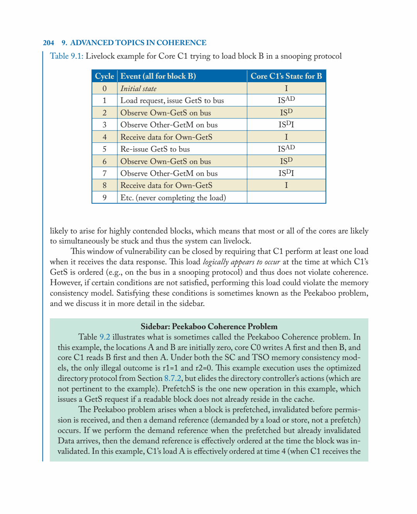
原书第 205 页PDF 227
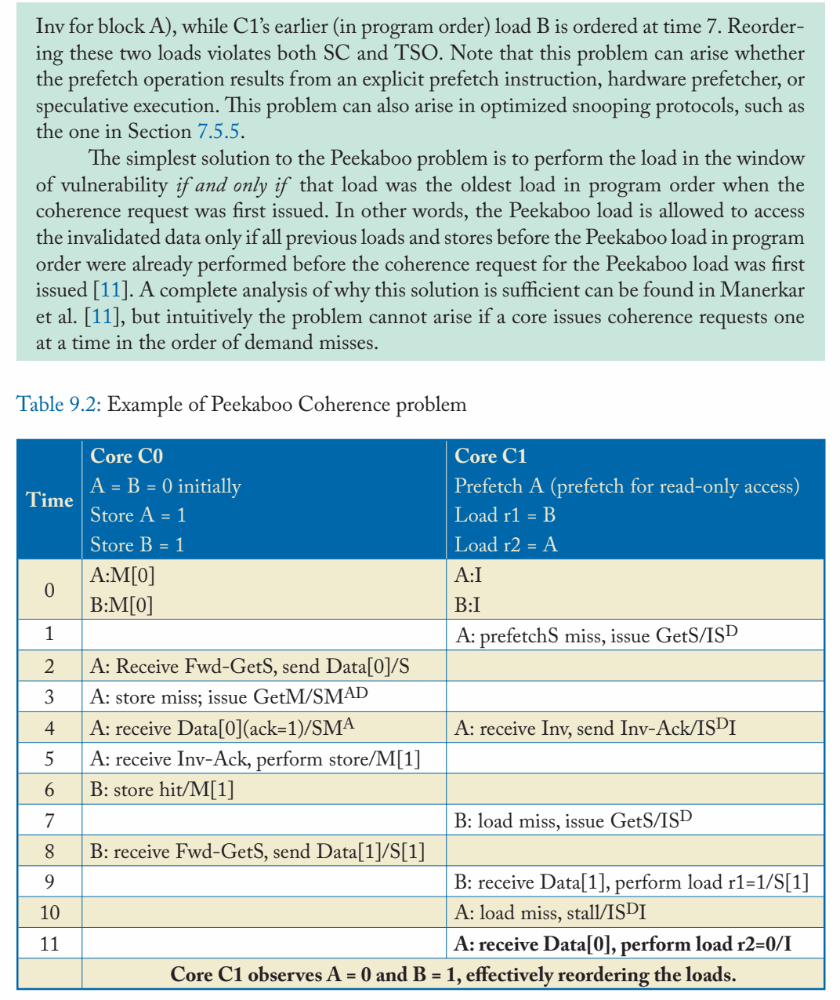
ENGLISHInv for block A), while C1’s earlier (in program order) load B is ordered at time 7. Reordering these two loads violates both SC and TSO. Note that this problem can arise whether the prefetch operation results from an explicit prefetch instruction, hardware prefetcher, or speculative execution. This problem can also arise in optimized snooping protocols, such as the one in Section 7.5.5.
中文Inv时；而按程序顺序更早的对B的加载，却被排序在时刻7。这两个加载的重排序同时违反SC和TSO。注意，无论预取来自显式预取指令、硬件预取器还是推测执行，都可能产生这一问题。7.5.5节等优化监听协议中也可能出现同样的问题。
ENGLISHThe simplest solution to the Peekaboo problem is to perform the load in the window of vulnerability if and only if that load was the oldest load in program order when the coherence request was first issued. In other words, the Peekaboo load is allowed to access the invalidated data only if all previous loads and stores before the Peekaboo load in program order were already performed before the coherence request for the Peekaboo load was first issued [11]. A complete analysis of why this solution is sufficient can be found in Manerkar et al. [11], but intuitively the problem cannot arise if a core issues coherence requests one at a time in the order of demand misses.
中文Peekaboo问题最简单的解决方法是：当且仅当首次发出缓存一致性请求时，该加载是程序顺序中最早的尚待执行的加载，才允许在脆弱窗口中执行它。换言之，只有在首次发出Peekaboo加载的一致性请求之前，程序顺序上位于该加载之前的全部加载和存储都已经执行，才允许该加载访问已经失效的数据[11]。Manerkar等人[11]给出了这一方案为何足够的完整分析；直观地说，如果核心按照按需未命中的顺序，一次只发出一个一致性请求，该问题就不可能出现。
展开可搜索的英文文字
Core C0 Core C1 A = B = 0 initially Prefetch A (prefetch for read-only access) Time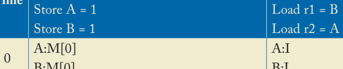
展开可搜索的英文文字
Store A = 1 Load r1 = B Store B = 1 Load r2 = A A:M[0] A:I 0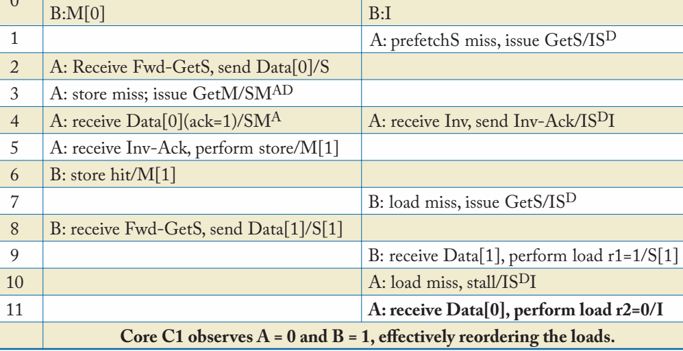
展开可搜索的英文文字
B:M[0] B:I 1 A: prefetchS miss, issue GetS/ISD 2 A: Receive Fwd-GetS, send Data[0]/S 3 A: store miss; issue GetM/SMAD 4 A: receive Data[0](ack=1)/SMA A: receive Inv, send Inv-Ack/ISDI 5 A: receive Inv-Ack, perform store/M[1] 6 B: store hit/M[1] 7 B: load miss, issue GetS/ISD 8 B: receive Fwd-GetS, send Data[1]/S[1] 9 B: receive Data[1], perform load r1=1/S[1] 10 A: load miss, stall/ISDI 11 A: receive Data[0], perform load r2=0/I Core C1 observes A = 0 and B = 1, eff ectively reordering the loads.查看 原书第 205 页 的完整原版面（PDF 227）
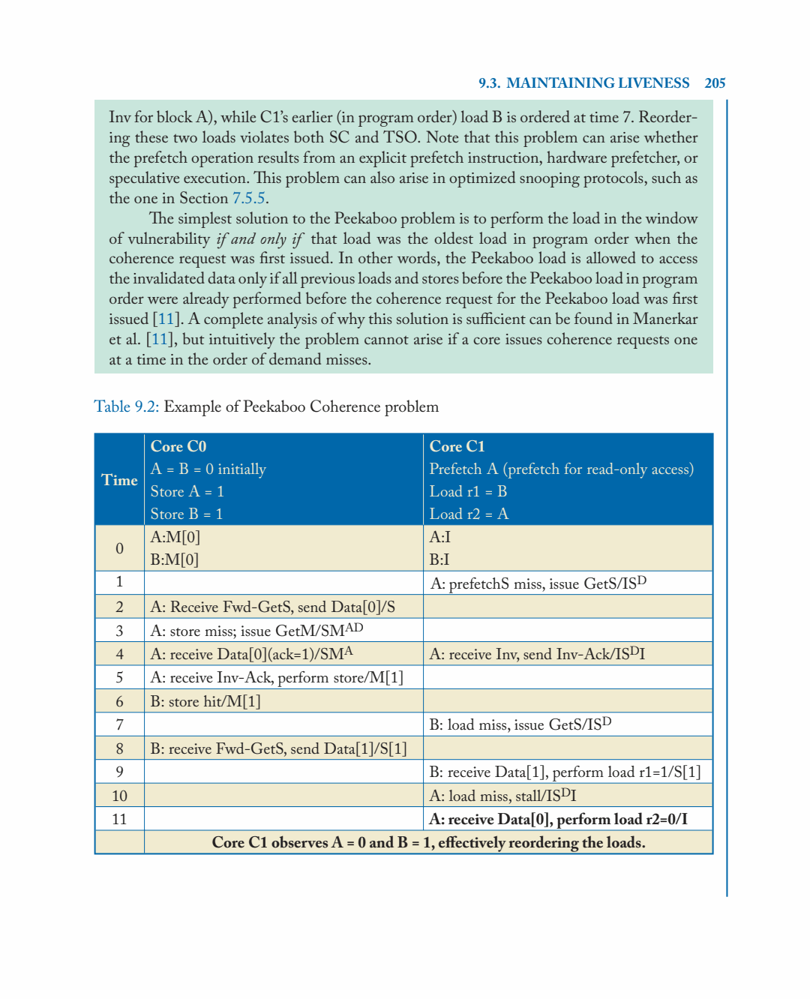
原书第 206 页PDF 228
ENGLISHThis same window of vulnerability exists for stores to blocks in IMDS, IMDSI, or IMDI. In these cases, the store to the block is never performed because the block’s state at the end of the transaction is either I or S, which is insufficient for performing a store. Fortunately, the same solution we presented for the load in ISDI applies to stores in these states. A core that issues a GetM must perform at least one store when it receives the data, and the core must forward this newly written data to the other core(s) that requested the block in S and/or M between when it observes its own GetM and when it receives the data in response to its GetM. Note that the same restriction needed to avoid the Peekaboo problem still applies: namely, perform the store if and only if the store was the oldest load or store in program order at the time the coherence request was issued.
中文对IMDS、IMDSI或IMDI状态块执行存储时，也存在同样的脆弱窗口。在这些情况下，对块的存储永远不会执行，因为事务结束时块的状态为I或S，均不具备执行存储所需的权限。幸运的是，前面对ISDI状态加载给出的解决方法，也适用于这些状态下的存储。发出GetM的核心在收到数据时必须至少执行一次存储；若在它观察到自身GetM之后、收到GetM对应数据之前，其他核心请求了该块的S和/或M权限，则必须将刚写入的新数据转发给这些核心。注意，为避免Peekaboo问题所需的限制仍然适用：当且仅当发出一致性请求时，该存储是程序顺序中最早的尚待执行的加载或存储，才执行该存储。
ENGLISH9.3.3 STARVATION Starvation is a situation in which one or more cores fail to make forward progress while other cores are still actively making forward progress. The cores not making progress are considered to be starved. There are several root causes of starvation, but they tend to fall into two categories: unfair arbitration and incorrect use of negative acknowledgments.
中文9.3.3 饥饿
饥饿是指一个或多个核心无法取得进展，而其他核心仍在持续取得进展。那些无法进展的核心就处于饥饿状态。饥饿有若干根本原因，但大体可归为两类：仲裁不公平，以及否定确认使用不当。
饥饿是指一个或多个核心无法取得进展，而其他核心仍在持续取得进展。那些无法进展的核心就处于饥饿状态。饥饿有若干根本原因，但大体可归为两类：仲裁不公平，以及否定确认使用不当。
ENGLISHStarvation can arise when at least one core cannot obtain a critical resource because the resource is always obtained or held by other cores. A classic example of this is an unfair bus arbitration mechanism in a bus-based snooping protocol. Consider a bus in which access to the bus is granted in a fixed priority order. If Core C1 wishes to make a request, it can make a request. If C2 wishes to make a request, it may make the request only if C1 has not first requested the bus. C3 must defer to C1 and C2, etc. In such a system, a core with a low priority may never gain permission to make a request and will thus starve. This well-known problem also has a well-known solution: fair arbitration.
中文如果至少一个核心无法获得关键资源，因为该资源总被其他核心获得或持有，就可能发生饥饿。经典示例是基于总线的监听协议中的不公平总线仲裁。设想总线按照固定优先级授予访问权：如果核心C1要发请求，就可以发出；如果C2要发请求，只有在C1尚未请求总线时才能发出；C3必须让位于C1和C2，依此类推。这样的系统中，低优先级核心可能永远得不到发请求的许可，因而饥饿。这个众所周知的问题也有众所周知的解决办法：公平仲裁。
ENGLISHThe other main class of starvation causes is the incorrect use of negative acknowledgments (NACKs) in coherence protocols. In some protocols, a coherence controller that receives a coherence request may send a NACK to the requestor (often used in verb form as “the controller NACKed the request”), informing the requestor that the request was not satisfied and must be re-issued. NACKs are generally used by protocols to simplify situations in which there is another transaction in progress for the requested block. For example, in some directory protocols, the directory can NACK a request if the requested block is already in the midst of a transaction. Solving these protocol race conditions with NACKs appears, at least at first blush, to be conceptually easier than designing the protocol to handle some of these rare and complicated situations. However, the challenge is ensuring that a NACKed request eventually succeeds. Guaranteeing a lack of starvation, regardless of how many cores are requesting the same block at the same time, is challenging; one of the authors of this primer confesses to having designed a protocol with NACKs that led to starvation.
中文另一类主要原因，是在缓存一致性协议中错误地使用否定确认（NACK）。某些协议中，一致性控制器收到请求后，可以向请求者发送NACK（有时将NACK用作动词，称为“控制器对请求进行了NACK”），告知请求者请求未得到满足，必须重新发出。协议通常借助NACK简化这样的情形：所请求的块已经有另一个事务正在进行。例如，某些目录协议中，如果块正处于事务过程中，目录就可以对新请求返回NACK。使用NACK处理这些协议竞态，乍看之下，在概念上似乎比直接设计协议处理少见而复杂的情形更容易。然而，难点在于确保收到NACK的请求最终能够成功。无论有多少核心同时请求同一个块，都保证不出现饥饿，是一项挑战；本书的一位作者就承认，自己曾设计过一个使用NACK、却导致饥饿的协议。
查看 原书第 206 页 的完整原版面（PDF 228）
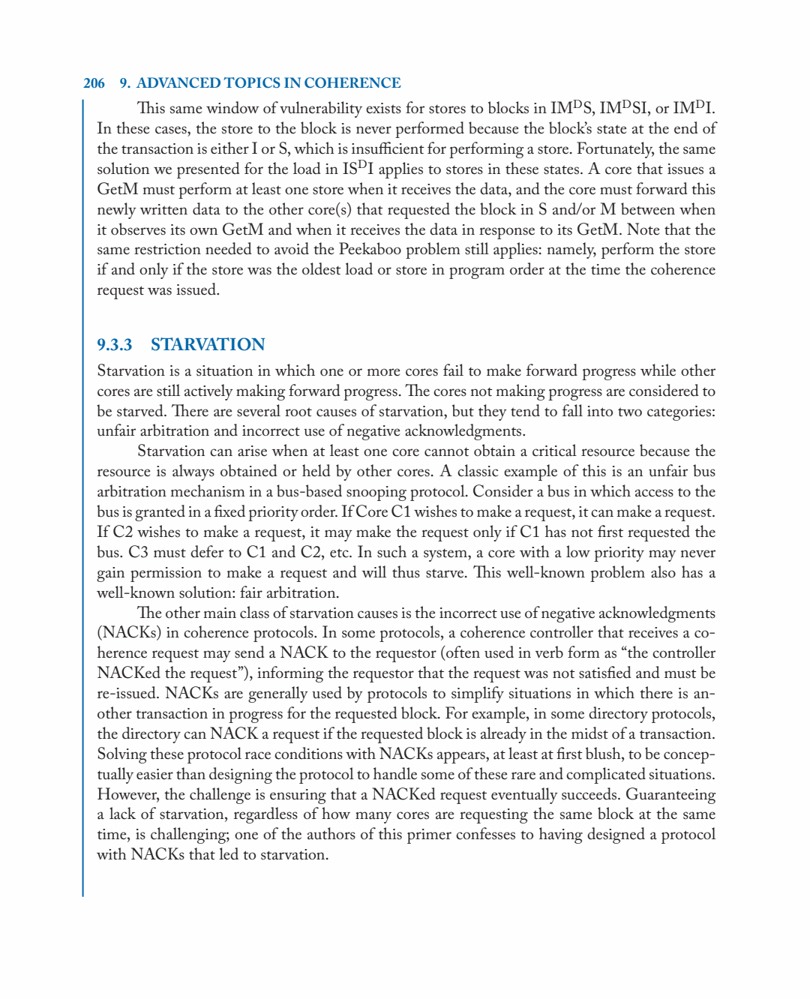
原书第 207 页PDF 229
ENGLISH9.4 TOKEN COHERENCE
中文9.4 令牌缓存一致性
ENGLISHUntil fairly recently, coherence protocols could be classified as either snooping or directory or perhaps a hybrid of the two. There were many variants of each class and several hybrids, but protocols were fundamentally some combination of snooping and directory. In 2003, Martin et al. proposed a third protocol classification called Token Coherence [12]. There are two key ideas behind Token Coherence (TC).
中文直到不久以前，缓存一致性协议还可以分为监听协议、目录协议，或二者的混合。每类都有许多变体，也存在若干混合形式，但从根本上看，这些协议都由监听和目录机制的某种组合构成。2003年，Martin等人提出了第三类协议，称为令牌缓存一致性（Token Coherence，TC）[12]。它背后有两个关键思想。
ENGLISHTC protocols associate tokens with each block instead of state bits. There is a fixed number of tokens per block, and the cores can exchange—but not create or destroy—these tokens. A core with one or more tokens for a block can read the block, and a core with all of the tokens for a block can read or write to the block.
中文TC协议为每个块关联令牌，而不是状态位。每个块的令牌总数固定，核心可以交换令牌，但不能创建或销毁令牌。持有某个块的一个或多个令牌的核心，可以读取该块；持有该块全部令牌的核心，则可以读写该块。
ENGLISHA TC protocol consists of two distinct parts: a correctness substrate and a performance protocol. The correctness substrate is responsible for ensuring safety (tokens are conserved) and liveness (all requests are eventually satisfied). The performance protocol specifies what a cache controller does on a cache miss. For example, in the TokenB performance protocol, all coherence requests are broadcast. In the TokenM protocol, coherence requests are multicast to a predicted set of sharers.
中文TC协议由两个不同部分构成：正确性基础层和性能协议。正确性基础层负责保证安全性（令牌守恒）与活性（全部请求最终得到满足）。性能协议规定缓存控制器在缓存未命中时执行什么操作。例如，在TokenB性能协议中，所有一致性请求都采用广播；在TokenM协议中，一致性请求被多播给预测得到的一组共享者。
ENGLISHToken Coherence subsumes snooping and directory protocols, in that snooping and directory protocols can be interpreted as TC protocols. For example, an MSI snooping protocol is equivalent to a TC protocol with a broadcast performance protocol. The MSI states are equivalent to a core having all/some/none of the tokens for a block.
中文令牌缓存一致性涵盖了监听协议和目录协议，因为后二者都可以解释为TC协议。例如，MSI监听协议等价于采用广播性能协议的TC协议。M、S、I状态分别等价于核心持有某个块的全部、部分或零个令牌。
ENGLISH9.5 THE FUTURE OF COHERENCE
中文9.5 缓存一致性的未来
ENGLISHAlmost since coherence’s invention, some have predicted that it will soon go away because it adds hardware cost to store extra state, send extra messages, and verify that all is correct. However, we predict that coherence will remain commonly implemented because, in our judgment the software cost of dealing with incoherence is often substantial and borne by a broader group of software engineers rather than the few hardware designers that confront implementing coherence. One piece of evidence for this claim is the adoption of coherence in recent heterogeneous systems, as we discuss in the next chapter. Differently from the protocols we discussed in Chapters 6–9, however, we will see that heterogeneous systems are suited to consistency-directed rather than consistency-agnostic coherence protocols.2
中文几乎从缓存一致性诞生起，就有人预测它很快会消失，因为它增加了保存额外状态、发送额外消息以及验证整体正确性的硬件成本。然而，我们预测缓存一致性仍会得到广泛实现。我们的判断是，应对缓存不一致的软件成本通常很高，而且这一成本由更广泛的软件工程师群体承担；实现缓存一致性的复杂性则主要由少数硬件设计者承担。下一章将讨论近期异构系统对缓存一致性的采用，这为上述判断提供了一项证据。不过，与第6—9章讨论的协议不同，我们将看到，异构系统适合采用由内存一致性模型指导的缓存一致性协议，而非与内存一致性模型无关的协议。²
ENGLISH9.6 REFERENCES
中文9.6 参考文献
ENGLISH[1] P. Conway and B. Hughes. The AMD Opteron northbridge architecture. IEEE Micro, 27(2):10–21, March/April 2007. DOI: 10.1109/mm.2007.43. 195
中文[1] P. Conway and B. Hughes. AMD Opteron北桥体系结构. IEEE Micro, 27(2):10–21, March/April 2007. DOI: 10.1109/mm.2007.43. 195
ENGLISH2Recall that in a consistency-directed coherence protocol (Section 2.3) there is no clean separation of coherence from consistency.
中文² 回顾一下，在由内存一致性模型指导的缓存一致性协议中（2.3节），缓存一致性与内存一致性之间并不存在清晰的分界。
查看 原书第 207 页 的完整原版面（PDF 229）
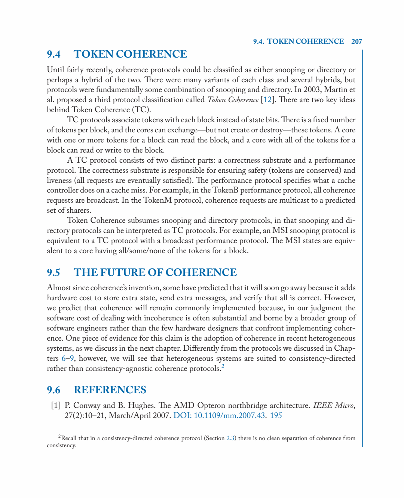
原书第 208 页PDF 230
ENGLISH[2] A. L. Cox and R. J. Fowler. Adaptive cache coherency for detecting migratory shared data. In Proc. of the 20th Annual International Symposium on Computer Architecture, pp. 98–108, May 1993. DOI: 10.1109/isca.1993.698549. 198
中文[2] A. L. Cox and R. J. Fowler. 用于检测迁移式共享数据的自适应缓存一致性. In Proc. of the 20th Annual International Symposium on Computer Architecture, pp. 98–108, May 1993. DOI: 10.1109/isca.1993.698549. 198
ENGLISH[3] W. J. Dally. Virtual channel flow control. IEEE Transactions on Parallel and Distributed Systems, 3(2):194–205, March 1992. DOI: 10.1109/71.127260. 201
中文[3] W. J. Dally. 虚拟通道流量控制. IEEE Transactions on Parallel and Distributed Systems, 3(2):194–205, March 1992. DOI: 10.1109/71.127260. 201
ENGLISH[4] K. Gharachorloo, M. Sharma, S. Steely, and S. V. Doren. Architecture and design of AlphaServer GS320. In Proc. of the 9th International Conference on Architectural Support for Programming Languages and Operating Systems, pp. 13–24, November 2000. DOI: 10.1145/378993.378997. 197
中文[4] K. Gharachorloo, M. Sharma, S. Steely, and S. V. Doren. AlphaServer GS320的体系结构与设计. In Proc. of the 9th International Conference on Architectural Support for Programming Languages and Operating Systems, pp. 13–24, November 2000. DOI: 10.1145/378993.378997. 197
ENGLISH[5] E. Hagersten and M. Koster. WildFire: A scalable path for SMPs. In Proc. of the 5th IEEE Symposium on High-Performance Computer Architecture, pp. 172–81, January 1999. DOI: 10.1109/hpca.1999.744361. 197
中文[5] E. Hagersten and M. Koster. WildFire：SMP的可扩展之路. In Proc. of the 5th IEEE Symposium on High-Performance Computer Architecture, pp. 172–81, January 1999. DOI: 10.1109/hpca.1999.744361. 197
ENGLISH[6] J. Huh, J. Chang, D. Burger, and G. S. Sohi. Coherence decoupling: Making use of incoherence. In Proc. of the 11th International Conference on Architectural Support for Programming Languages and Operating Systems, October 2004. DOI: 10.1145/1024393.1024406. 199
中文[6] J. Huh, J. Chang, D. Burger, and G. S. Sohi. 缓存一致性解耦：利用不一致性. In Proc. of the 11th International Conference on Architectural Support for Programming Languages and Operating Systems, October 2004. DOI: 10.1145/1024393.1024406. 199
ENGLISH[7] M. Kadiyala and L. N. Bhuyan. A dynamic cache sub-block design to reduce false sharing. In Proc. of the International Conference on Computer Design, 1995. DOI: 10.1109/iccd.1995.528827. 199
中文[7] M. Kadiyala and L. N. Bhuyan. 用于减少伪共享的动态缓存子块设计. In Proc. of the International Conference on Computer Design, 1995. DOI: 10.1109/iccd.1995.528827. 199
ENGLISH[8] J. Kubiatowicz, D. Chaiken, and A. Agarwal. Closing the window of vulnerability in multiphase memory transactions. In Proc. of the 5th International Conference on Architectural Support for Programming Languages and Operating Systems, pp. 274–84, October 1992. DOI: 10.1145/143365.143540. 203
中文[8] J. Kubiatowicz, D. Chaiken, and A. Agarwal. 关闭多阶段存储器事务中的脆弱窗口. In Proc. of the 5th International Conference on Architectural Support for Programming Languages and Operating Systems, pp. 274–84, October 1992. DOI: 10.1145/143365.143540. 203
ENGLISH[9] H. Q. Le et al. IBM POWER6 microarchitecture. IBM Journal of Research and Development, 51(6), 2007. DOI: 10.1147/rd.516.0639.
中文[9] H. Q. Le et al. IBM POWER6微体系结构. IBM Journal of Research and Development, 51(6), 2007. DOI: 10.1147/rd.516.0639.
ENGLISH[10] D. Lenoski, J. Laudon, K. Gharachorloo, A. Gupta, and J. Hennessy. The directorybased cache coherence protocol for the DASH multiprocessor. In Proc. of the 17th Annual International Symposium on Computer Architecture, pp. 148–59, May 1990. DOI: 10.1109/isca.1990.134520. 197
中文[10] D. Lenoski, J. Laudon, K. Gharachorloo, A. Gupta, and J. Hennessy. DASH多处理器的目录式缓存一致性协议. In Proc. of the 17th Annual International Symposium on Computer Architecture, pp. 148–59, May 1990. DOI: 10.1109/isca.1990.134520. 197
ENGLISH[11] Y. A. Manerkar, D. Lustig, M. Pellauer, and M. Martonosi. CCICheck: using (cid:22)hb graphs to verify the coherence-consistency interface. In Proc. of the 48th International Symposium on Microarchitecture, 2015. DOI: 10.1145/2830772.2830782. 205

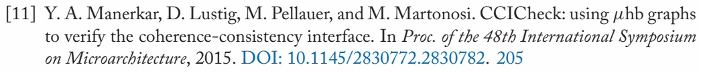
数学符号与上下标以此原版面为准中文[11] Y. A. Manerkar, D. Lustig, M. Pellauer, and M. Martonosi. CCICheck：利用μhb图验证缓存一致性与内存一致性之间的接口. In Proc. of the 48th International Symposium on Microarchitecture, 2015. DOI: 10.1145/2830772.2830782. 205
ENGLISH[12] M. M. K. Martin, M. D. Hill, and D. A. Wood. Token coherence: Decoupling performance and correctness. In Proc. of the 30th Annual International Symposium on Computer Architecture, June 2003. DOI: 10.1109/isca.2003.1206999. 191, 207
中文[12] M. M. K. Martin, M. D. Hill, and D. A. Wood. 令牌缓存一致性：性能与正确性的解耦. In Proc. of the 30th Annual International Symposium on Computer Architecture, June 2003. DOI: 10.1109/isca.2003.1206999. 191, 207
查看 原书第 208 页 的完整原版面（PDF 230）
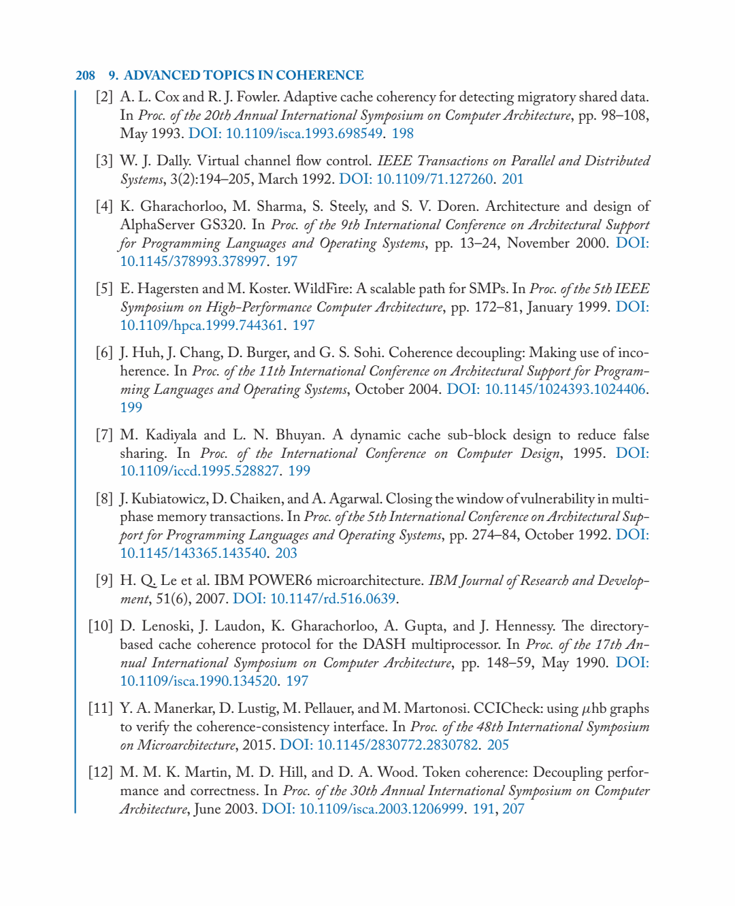
原书第 209 页PDF 231
ENGLISH[13] M. R. Marty and M. D. Hill. Virtual hierarchies to support server consolidation. In Proc. of the 34th Annual International Symposium on Computer Architecture, June 2007. DOI: 10.1145/1250662.1250670. 198
中文[13] M. R. Marty and M. D. Hill. 支持服务器整合的虚拟层次结构. In Proc. of the 34th Annual International Symposium on Computer Architecture, June 2007. DOI: 10.1145/1250662.1250670. 198
ENGLISH[14] S. S. Mukherjee and M. D. Hill. Using prediction to accelerate coherence protocols. In Proc. of the 25th Annual International Symposium on Computer Architecture, pp. 179–90, June
中文[14] S. S. Mukherjee and M. D. Hill. 利用预测加速缓存一致性协议. In Proc. of the 25th Annual International Symposium on Computer Architecture, pp. 179–90, June
ENGLISH1998. DOI: 10.1109/isca.1998.694773. 199
中文1998. DOI: 10.1109/isca.1998.694773. 199
ENGLISH[15] J. Nilsson and F. Dahlgren. Improving performance of load-store sequences for transaction processing workloads on multiprocessors. In Proc. of the International Conference on Parallel Processing, pp. 246–55, September 1999. DOI: 10.1109/icpp.1999.797410. 198
中文[15] J. Nilsson and F. Dahlgren. 提升多处理器上事务处理工作负载的加载—存储序列性能. In Proc. of the International Conference on Parallel Processing, pp. 246–55, September 1999. DOI: 10.1109/icpp.1999.797410. 198
ENGLISH[16] B. F. Romanescu, A. R. Lebeck, D. J. Sorin, and A. Bracy. UNified instruction/translation/data (UNITD) coherence: One protocol to rule them all. In Proc. of the 15th International Symposium on High-Performance Computer Architecture, January 2010. DOI: 10.1109/hpca.2010.5416643. 192
中文[16] B. F. Romanescu, A. R. Lebeck, D. J. Sorin, and A. Bracy. 统一指令／地址转换／数据（UNITD）一致性：以一个协议统一管理. In Proc. of the 15th International Symposium on High-Performance Computer Architecture, January 2010. DOI: 10.1109/hpca.2010.5416643. 192
ENGLISH[17] P. Stenström, M. Brorsson, and L. Sandberg. An adaptive cache coherence protocol optimized for migratory sharing. In Proc. of the 20th Annual International Symposium on Computer Architecture, pp. 109–18, May 1993. DOI: 10.1109/isca.1993.698550. 198
中文[17] P. Stenström, M. Brorsson, and L. Sandberg. 面向迁移式共享优化的自适应缓存一致性协议. In Proc. of the 20th Annual International Symposium on Computer Architecture, pp. 109–18, May 1993. DOI: 10.1109/isca.1993.698550. 198
ENGLISH[18] P. J. Teller. Translation-lookaside buffer consistency. IEEE Computer, 23(6), pp. 26–36, June 1990. DOI: 10.1109/2.55498. 192
中文[18] P. J. Teller. 地址转换后备缓冲器一致性. IEEE Computer, 23(6), pp. 26–36, June 1990. DOI: 10.1109/2.55498. 192
查看 原书第 209 页 的完整原版面（PDF 231）
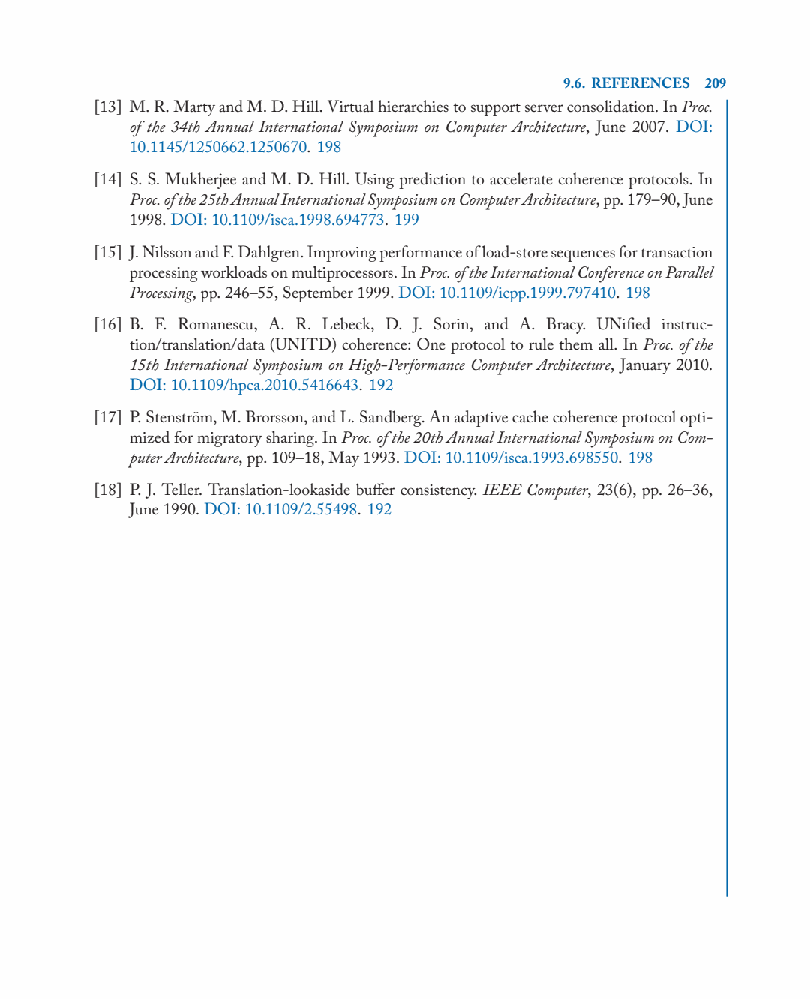